Warning: IE10 for Windows 7 has a problem with POST Ajax requests and until this is fixed by Microsoft Canvas Control Library will not support IE10 on Windows 7. IE10 on Windows 8 is working fine.
Work Around to above Warning:
The meta tag I had recommended to use before was with IE=edge. This still stands unless you are on Windows 7 and automatic updates has updated IE to version 10 for Windows 7. If you are on Windows 7 with IE 10 then to continue working with IE change the meta tag attribute from IE=edge to IE=EmulateIE9. Basically as this describes the browser will now work like an IE9 browser in which case your Canvas Control Library ajax Post calls will not break and your website will run on this client.
Changes to article that caused this new version:
Since the article is very long as it documents the entire system of Canvas Control Library I will use this section to describe what has changed in the article from the last version to this current one so you do not have to go through the entire article again. Towards that end here are the changes:
Currently if you want to use controls like Button or ComboBox in HTML5 you have the HTML5 elements to use and place on your web page. These controls that come free with HTML5 are limited in the extent to which they can be made fancy or as in ComboBox if you wanted the text and dropdown list to contain images for backgrounds or complex controls you would find this to be quite hard. Another new element that has been introduced in HTML5 is the canvas element. This element allows for drawing whatever you want on it using JavaScript. The current situation though is there are no controls you can use that are available that are purely based on the canvas. To plug this gap I have created a Canvas Control Library with all the common controls and advanced ones like TreeView which due to the nature of canvas allow for great control over the graphical presentation of the controls and their item contents. So in the case of the ComboBox example with my Canvas Control Libraries ComboBox adding images to the background of the text area and list drop down is quite easy. Also animated graphing and charting controls have been ported to first class Canvas Control Library controls.
Besides the screenshots in this article I am hosting the ASP.NET based example web pages and the PHP example running on Apache and a PHP example running on IIS. You can check the new system out fully functional on any major browser. Also as there is constant new additions will now also tweet the changes on Twitter. Have created a Facebook page for the system. So if you like the system are evaluating it or using it follow me on Twitter and like and watch the Facebook page alternatively or as well.
The main example is the FormsBased.aspx (ASP.NET/PHP on Apache/PHP on IIS/PHP on Ubuntu Linux) if you look at this you will notice the following differences between this new system of mine and the current normal old way of doing web pages with form user input requiring server postbacks and showing the new results on the client:
The code for the JavaScript is downloadable from GitHub repository link for Canvas Control Library . Examples for ASP.NET are available currently in the same GitHub repository.
The simplest element is Label control and to add a label to your canvas you would make the following JavaScript call from your web page after the canvas element on which you mean to draw the label as follows:
createLabel(elemId, 'l1', 150, 10, 100, 20, 'Label 1', '#000000', 12, '12pt Ariel', null, highestDepth);
The basic function call for creating a label is:
function createLabel(canvasid, controlNameId, x, y, width, height, text,
textColor, textHeight, textFontString, drawFunction, depth, alignment, clickFunction,
backgroundColor, autoAdjustWidth, tag, isHyperlink, url, nobrowserhistory, isnewbrowserwindow,
nameofnewbrowserwindow, widthofnewbrowserwindow, heightofnewbrowserwindow, newbrowserwindowisresizable,
newbrowserwindowhasscrollbars, newbrowserwindowhastoolbar, newbrowserwindowhaslocationorurloraddressbox,
newbroserwindowhasdirectoriesorextrabuttons, newbrowserwindowhasstatusbar,
newbrowserwindowhasmenubar, newbrowserwindowcopyhistory)
So what this means is that the id of the canvas for example "canvas1" is passed in which is the canvas on which you want to draw is the first parameter to the function call. The second and third parameters x, y is the point location of the top left corner of the label you want to draw at on the canvas. The width and the height of the label. The text parameter is the text you want to display for the label in this case the label when drawn will display text Label 1 at location 150, 50 on the canvas1 canvas. The textColor is the color of the text you want drawn. The textHeight is essentially the same as the textFontString font point value which in this case is 12 as we are using 12 point Ariel font for drawing the label text. The drawFunction is an override so that if you wanted to draw something custom you could supply your own JavaScript canvas drawing code to draw the label in any custom way you like. The depth value is the layer on which the control will be drawn and normally you want to use the highestDepth variable value which is defined and maintained in the Canvas Control Libraries internal JavaScript code. You can also make the label into a hyperlink and supply the parameters. Look at button examples which provide using the extra hyperlink parameters.
To add a button to your canvas you would make the following JavaScript call from your web page after the canvas element on which you mean to draw the button as follows:
createButton(elemId, 'b1', 10, 10, 100, 30, 'Google Search', '#0000FF', 12,
'12pt Ariel', 5, highestDepth, 1, 0, null, null, '#bee6fd', '#a7d9f5',
'#eaf6fd', '#d9f0fc', '#3c7fb1', null, 1, 'http://www.google.com');
createButton(elemId, 'b2', 50, 38, 100, 40, 'CodeProject', '#0000FF',
12, '12pt Ariel', 10, highestDepth + 1, 1, 1, null, null, '#bee6fd', '#a7d9f5', '#eaf6fd',
'#d9f0fc', '#3c7fb1', null, 1, 'http://www.codeproject.com', 0, 1, 'CodeProject',
'600', '400', 'no', 'no', 'no', 'no', 'no', 'no', 'no', 'no');
createButton(elemId, 'b8', 500, 74, 250, 56, 'Custom Click Function', '#0000FF',
12, '12pt Ariel', 7, highestDepth + 1, 2, 1,
function (canvasid, windowid) { invokeServerSideFunction('AjaxEx1.aspx',
'ClickMe', elemId, windowid, function () { alert('Did Postback'); }); },
null, '#bee6fd', '#a7d9f5', '#eaf6fd', '#d9f0fc', '#3c7fb1');
The basic function call for creating a button is:
createButton(canvasid, controlNameId, x, y, width, height, text, textColor,
textHeight, textFontString, edgeRadius, depth, theme, hasgloss, clickFunction, drawFunction,
bottomColorStart, bottomColorEnd, topColorStart, topColorEnd, borderColor, tag, isHyperlink,
url, nobrowserhistory, isnewbrowserwindow, nameofnewbrowserwindow, widthofnewbrowserwindow,
heightofnewbrowserwindow, newbrowserwindowisresizable,
newbrowserwindowhasscrollbars, newbrowserwindowhastoolbar,
newbrowserwindowhaslocationorurloraddressbox, newbroserwindowhasdirectoriesorextrabuttons,
newbrowserwindowhasstatusbar, newbrowserwindowhasmenubar, newbrowserwindowcopyhistory)
The first example will draw a button on canvas1 at 10, 10 with a width of 100 pixels and a height of 40 pixels with blue 12 pt Ariel font button label text Google Search. The only new thing is that when you click the button you go the URL provided www.google.com. We do not provide a custom drawing JavaScript function so we set the drawFunction parameter to null. The parameters bottomColorStart, bottomColorEnd, topColorStart and topColorEnd define the bottom half gradient and top half gradient of the background of the button. The borderColor parameter draws the border line in that color. When isnewbrowserwindow is set to 1 as in the second example you provide all the parameters to customize the new browser window to display the URL in the case of second example www.codeproject.com. In the third example you don't use hyperlinks so you don't provide any of those parameters and just provide a custom javascript click function to do custom logic in the case of the example it pops up an alert box.
Themes the beautification begins with 2 themes for buttons 1 & 2 with gloss and the screenshot for theme 1 is shown below:
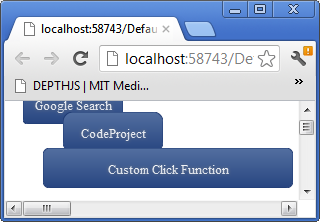
The screenshot for theme 2 is shown below which is a more complex theme:
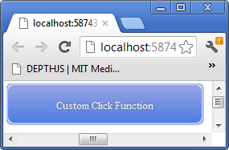
To add a grid to your canvas you would make the following JavaScript call from your web page after the canvas element on which you mean to draw the grid as follows:
createGrid(elemId, 'g1', 10, 150, 400, 90, highestDepth,
<<'123567891011121314', 'abcdefghijklmnopqrst', '000-89843-8983459'>, <'2356789101112131415',
'bcdefghijklmnopqrstu', '000-89843-8983459'>, <'35678910111213141516', 'cdefghijklmnopqrstuv',
'000-89843-8983459'>, <'45678910111213141516', 'defghijklmnopqrstuv', '000-89843-8983459'>,
<'5678910111213141516', 'efghijklmnopqrstuv', '000-89843-8983459'>, <'678910111213141516',
'fghijklmnopqrstuv', '000-89843-8983459'>>, <'Numbers', 'Alphabets', 'GUIDS'>, '#000000', 12,
'12pt Ariel', '#000000', 14, '14pt Ariel', null, null, function (canvasid, windowid, c, r) {
alert('you clicked cell number ' + c + ' at row number ' + r); }, 20, 30, <150, 150, 200>, 1,
'#b7bfc8', 1, '#fbfbfb', '#d9dde1', '#f6f8fb', '#e7e7e7', '#eaf1ff', '#d7e5ff');
The basic function call for creating a grid is:
createGrid(canvasid, controlNameId, x, y, width, height, depth, rowData,
headerData, rowDataTextColor, rowDataTextHeight, rowDataTextFontString, headerDataTextColor,
headerDataTextHeight, headerDataTextFontString, drawRowDataCellFunction, drawHeaderCellFunction,
cellClickFunction, dataRowHeight, headerRowHeight, columnWidthArray, hasBorder, borderColor,
borderLineWidth, headerbackgroundstartcolor, headerbackgroundendcolor, altrowbgcolorstart1,
altrowbgcolorend1, altrowbgcolorstart2, altrowbgcolorend2, tag)
In the createGrid function one of the new parameters is rowData which is simply an array which contains an array for each row which contains the cell text to draw for each cell. The next array headerData is an array containing the header cell text to draw for each header row. One of the advantages is that the header row stays put on scrolling the contents of the grid and only the rowData contents rows and cells that is scroll. You can custom draw the cell contents by passing in a JavaScript function which draws them for the drawRowDataCellFunction which in the examples case we use the default drawing method supplied by passing in null. You can do the same for drawing the header cells which in the examples case is null so default drawing method will be used. I have supplied a cellClickFunction which simply pops up a message box informing you which cell at which row you clicked on the grid but you can change this of course to do whatever complex business or game logic you need. The dataRowHeight is the height of each row which has to be uniform and fixed and in the example is set to 20 pixels. Same for the header row height which is set to 30 pixels. The columnWidthArray allows you to pass in an array containing the width's of all the columns in your grid. The rest of the three parameters concern how to draw the border of the grid. The last 6 parameters are all used to gradient paint the header and alternate row backgrounds.
In the case of a ListBox all you have to do is create a grid with only 1 column. That is why I have not provided a separate control for ListBox.
To add a ComboBox to your canvas you would make the following JavaScript call from your web page after the canvas element on which you mean to draw the ComboBox as follows:
createComboBox(elemId, 'cb1', 10, 280, 200, 20, highestDepth, <'Mumbai','Pune','Juhu',
'Phoenix','London','New York','San Fransisco','Los Angeles','Houston','Boston'>, null, null,
null, null, null, '#364635', 10, '10pt Ariel', '#1b213b', 10, '10pt Ariel');
The basic function call for create ComboBox is:
createComboBox(canvasid, controlNameId, x, y, width, height, depth, data,
drawTextAreaFunction, drawButtonFunction, drawListAreaFunction, buttonClickFunction,
listAreaClickFunction, textAreaTextColor, textAreaTextHeight, textAreaFontString, listAreaTextColor,
listAreaTextHeight, listAreaFontString, onSelectionChanged, tag)
The data parameter is an array containing the list of strings to display in the dropdown list area. Some of the new parameters here are drawTextAreaFunction, drawButtonFunction, drawListAreaFunction which are all passed in as null in the example using default drawing capabilities. You can override these to completely customize the drawing of the ComboBox.
To add a CheckBox to your canvas you would make the following JavaScript call from your web page after the canvas element on which you mean to draw the CheckBox as follows:
createCheckbox(elemId, 'chk1', 150, 320, highestDepth, 0);
The basic function call for creating a CheckBox is:
createCheckbox(canvasid, controlNameId, x, y, depth, status, tag)
In this case the new parameter is status which is 1 for checked and 0 for not checked.
To add a Radio Button Group to your canvas you would make the following JavaScript call from your web page after the canvas element on which you mean to draw the Radio Button Group as follows:
createRadioButtonGroup(elemId, 'rg1', 10, 350, 0, highestDepth, 'test1',
<'Dog', 'Cat', 'Horse', 'Cow', 'Giraffe'>, 0, '#000000', '10pt Ariel', 10, 10);
The basic function call for creating a Radio Button Group is:
createRadioButtonGroup(canvasid, controlNameId, x, y, alignment, depth, groupname,
labels, selectedid, labelTextColor, labelFontString, labelTextHeight, radius, tag)
Some of the new parameters are alignment which is right now only possible to set it to 0 and is ignored in the code and will draw the radio buttons in a horizontal line. Later on you will be set it to 1 and have it draw the radio buttons vertically stacked. The groupname parameter is the name of the radio button group for easy identification and is test1 in the example. The labels parameter is an array containing the labels text for each radio button and will be drawn in the order supplied. The selectedid parameter is the index into the array to start with that is selected.
To add an Image to your canvas you would make the following JavaScript call from your web page after the canvas element on which you mean to draw the Image as follows:
createImage(elemId, 'i1', 10, 400, 64, 64, highestDepth, 'test.png',
function (canvasid, windowid) { alert('You clicked the image'); });
The basic function call for creating a Image is:
createImage(canvasid, controlNameId, x, y, width, height, depth, imgurl,
clickFunction, tile, tag, isHyperlink, url, nobrowserhistory,
isnewbrowserwindow, nameofnewbrowserwindow,
widthofnewbrowserwindow, heightofnewbrowserwindow,
newbrowserwindowisresizable, newbrowserwindowhasscrollbars,
newbrowserwindowhastoolbar, newbrowserwindowhaslocationorurloraddressbox,
newbroserwindowhasdirectoriesorextrabuttons,
newbrowserwindowhasstatusbar,
newbrowserwindowhasmenubar, newbrowserwindowcopyhistory)
The new parameters here is the imgurl which as it suggests is the URL link path to the image to draw and clickFunction is the function to be executed when the image is clicked which in the case of the example pops up a message 'You clicked the image'. Again this image like button and label can be turned into hyperlinks. Look at button for a description of how to specify the optional parameters.
To add an TreeView to your canvas you would make the following JavaScript call from your web page after the canvas element on which you mean to draw the TreeView as follows:
The example is still to be created by me.
The basic function call for creating a TreeView is:
createTreeView(canvasid, controlNameId, x, y, width, height, depth, nodes, textcolor,
textfontstring, textheight, clickNodeFunction, tag, hasicons, iconwidth, iconheight)
The nodes parameter replaces the data parameter from the old version. You do not create this yourself any longer you instead use the helper function addChildNodes(nodes, parentnode, imageurl, expanded, label, customextrainfo). Also each node format is { TreeviewNodeInstancesParentNode: parentnode, TreeviewNodeInstancesRootNodes: nodes, ImageURL: imageurl, Expanded: expanded, ChildNodes: new Array(), Label: label, CustomExtraInfo: customextrainfo }. This is self explanatory. The clickNodeFunction is the JavaScript function to execute when a node is clicked which in the case of the example just pops up a message giving the id col index value of the node. Now the node array can have an additional element the URL of an icon image to display so for example a node will be <2,1,'Test',1,'MyImage.png'>. If you are using icons then hasicons should be 1 and you must provide width and height and all icons therefore obviously must be same width and height or there will be dispay errors.
To add an ProgressBar to your canvas you would make the following JavaScript call from your web page after the canvas element on which you mean to draw the ProgressBar as follows:
createProgressBar(elemId, 'pg2', 10, 290, 200, 20, highestDepth, '#33ec25', 100, 0, 60);
The basic function call for creating a ProgressBar is:
createProgressBar(canvasid, controlNameId, x, y,
width, height, depth, color, maxvalue, minvalue, currentvalue, tag)
Color is the color of the progress bar. The maxvalue parameter is the maximum value or when progress is 100% which is the width of the control. The minvalue parameter is 0 in this example but if you wanted to treat say 30 out of 100 as showing a progress bar at 0% which is no length then this parameter can be useful. The currentvalue is the value of the progressbar and you can use the setProgressBarCurrentValue function to change this value whenever you want to show a different percentage of progress the progressbar is measuring for you. The windowid parameter for this function is returned by the createProgressBar function so you can save this in a variable and pass it in when needed.
To add a Slider to your canvas you would make the following JavaScript call from your web page after the canvas element on which you mean to draw the Slider as follows:
createSlider(elemId, 's2', 10, 350, 200, 20, highestDepth, 10, 100, 0, 50);
The basic function call for creating a Slider is:
createSlider(canvasid, controlNameId, x, y, width,
height, depth, handlewidth, maxvalue, minvalue, value, tag)
You can specify the size of the handle on the slider throught height and handlewidth parameters. The maximum value and the minimum value and the current value which is the position of the handle on the slider have to also be provided as parameters.
To add a Panel to your canvas you would make the following JavaScript call from your web page after the canvas element on which you mean to draw the Panel as follows:
var panelwindowid = createPanel(elemId, 'p1', 5, 50, 150, 140,
highestDepth, 1, '#c8c8c8', 1, '#d1ddff', '#a7afc6');
registerChildWindow(elemId, createProgressBar(elemId, 'pg1', 10, 100, 200, 20,
highestDepth, '#33ec25', 100, 0, 60), panelwindowid);
registerChildWindow(elemId, createSlider(elemId, 's1', 10, 150, 200, 20,
highestDepth, 10, 100, 0, 50), panelwindowid);
var panelwindowid2 = createPanel(elemId, 'p2', 5, 250, 150, 140,
highestDepth, 1, '#c8c8c8', 1, '#d1ddff', '#a7afc6', 1, 150, 0, 'Test Panel',
'#000000', 12, '12pt Ariel', '#cfcfcf', '#ababab', 20, '#495be5', 1, 7);
registerChildWindow(elemId, createProgressBar(elemId, 'pg2', 10, 290, 200, 20,
highestDepth, '#33ec25', 100, 0, 60), panelwindowid2);
registerChildWindow(elemId, createSlider(elemId, 's2', 10, 350,
200, 20, highestDepth, 10, 100, 0, 50), panelwindowid2);
var panelwindowid3 = createPanel(elemId, 'p3', 5, 400, 150, 140,
highestDepth, 1, '#c8c8c8', 1, '#d1ddff',
'#a7afc6', 1, 150, 0, 'Test Panel', '#000000', 12,
'12pt Ariel', '#cfcfcf', '#ababab', 20, '#495be5', 0, 7);
registerChildWindow(elemId, createProgressBar(elemId, 'pg3', 10, 430, 200, 20,
highestDepth, '#33ec25', 100, 0, 60), panelwindowid3);
registerChildWindow(elemId, createSlider(elemId, 's3', 10, 470, 200, 20,
highestDepth, 10, 100, 0, 50), panelwindowid3);
var panelwindowid3 = createPanel(elemId, 5, 350,
150, 140, highestDepth, 1, '#c8c8c8',
1, '#d1ddff', '#a7afc6', 1, 150, 0, 'Test Panel', '#000000', 12,
'12pt Ariel', '#cfcfcf', '#ababab', 20, '#495be5', 0, 7);
registerChildWindow(elemId, createProgressBar(elemId, 10, 380, 200, 20,
highestDepth, '#33ec25', 100, 0, 60), panelwindowid3);
registerChildWindow(elemId, createSlider(elemId, 10, 420, 200, 20,
highestDepth, 10, 100, 0, 50), panelwindowid3);
The basic function call for creating a Panel is:
createPanel(canvasid, controlNameId, x, y,
width, height, depth, hasBorder, borderColor,
hasBackgroundGradient, backgroundStartColor,
backgroundEndColor, iscollapsable, collapsedWidth,
collapsedHeight, panellabel, panelLabelTextColor,
panelLabelTextHeight, panelLabelTextFontString,
headerBackgroundStartColor, headerBackgroundEndColor, headerheight,
expandCollapseButtonColor, isexpanded, expandCollapseButtonRadius, tag)
The panel creation first example is nothing other than a rectangle with a gradient filled as specified by the parameters. To add child controls to the panel you use the registerChildWindow function. In this case I have attached a slider and a progress bar controls to the panel. As you will notice in the screenshot below they are clipped to the region defined by their parent control the panels boundaries. The second and third examples show how to make an expandable collapsable panel. The second example starts the panel expanded and the third collapsed.

To add a Calender to your canvas you would make the following JavaScript call from your web page after the canvas element on which you mean to draw the TeeView as follows:
createCalendar(elemId, 'cal1', 10, 10, 358, 408, highestDepth, 'July', '2012',
'3 July 2012', 50, 50, 50, '#7979AE', '#bbbbc8', '#202020', 16, '16pt Ariel', '#000000', 12, '12pt Ariel',
'#D0D0D0', 12, '12pt Ariel', '#d2d2fd', 12, '12pt Ariel', '#9898b7', '#FFFFFF', 12, '12pt Ariel', '#b4b4ff',
'#d3d3fb', function (canvasid, windowid, selectedDay) { alert('You selected the date ' +
selectedDay.toString()); }, '#6f7791', 12, '12pt Ariel');
The basic function call for create Calender is:
createCalendar(canvasid, controlNameId, x, y, width, height, depth, visibleMonth,
visibileYear, selectedDay, dayCellWidth, dayCellHeight, headerHeight, headerBackgroundColor,
bodyBackgroundColor, textHeaderColor, textHeaderHeight, textHeaderFontString, dayDateActiveColor,
dayDateActiveTextHeight, dayDateActiveTextFontString,
dayDateInactiveTextColor, dayDateInactiveTextHeight,
dayDateInactiveTextFontString, selectedDayTextColor,
selectedDayTextHeight, selectedDayTextFontString,
selectedDayHighLightColor, todayTextColor,
todayTextHeight, todayTextFontString, todayHighLightColor,
mouseoverHightlightColor, ondayClickFunction,
dayLabelTextColor, dayLabelTextHeight, dayLabelTextFontString, tag)
The month and year is supplied as full month name example July and year number example 2012 through the visibleMonth and visibleYear parameters. The selectedDay parameter when supplied will highlight that day on the calender as being selected which changes as the user clicks on a day. The width and height of a day cell is supplied through dayCellWidth and dayCellHeight parameters. The height of the header where the month name and year with buttons is supplied by the headerHeight parameter. dayDateActive... parameters supply the information to draw the dates for days that are in the visible month. dayDateInactive... parameters for those dates on the calender that are not in the visible month. today... parameters supply how to draw today's date. The ondayClickFunction supplies an ability for you to do custom logic when a day is clicked on the calender. dayLabel... parameters supply how to draw the header names of the days example Mon, Tue, etc.
A screenshot of the calender example follows:

Small calender example javascript:
createCalendar(elemId, 'cal2', 10, 500, 148, 168, highestDepth, 'July', '2012',
'3 July 2012', 20, 20, 20, '#7979AE', '#bbbbc8', '#202020', 8, '8pt Ariel', '#000000', 8,
'8pt Ariel', '#D0D0D0', 8, '8pt Ariel', '#d2d2fd', 8, '8pt Ariel', '#9898b7', '#FFFFFF', 8,
'8pt Ariel', '#b4b4ff', '#d3d3fb', function (canvasid, windowid, selectedDay)
{ alert('You selected the date ' + selectedDay.toString()); }, '#6f7791', 8, '8pt Ariel');
A screenshot of the small calender example follows:

To add a DatePicker to your canvas you would make the following JavaScript call from your web page after the canvas element on which you mean to draw the DatePicker as follows:
createDatePicker(elemId, 'cdp1', 10, 700, 148, 20, highestDepth, 'July', '2012',
'3 July 2012', 20, 20, 20, '#7979AE', '#bbbbc8', '#202020', 8, '8pt Ariel', '#000000', 8, '8pt Ariel',
'#D0D0D0', 8, '8pt Ariel', '#d2d2fd', 8, '8pt Ariel', '#9898b7', '#FFFFFF', 8, '8pt Ariel', '#b4b4ff',
'#d3d3fb', null, '#6f7791', 8, '8pt Ariel', '#000000', 12, '12pt Ariel', 168);
The basic function call for create Calender is:
createDatePicker(canvasid, controlNameId, x, y, width, height, depth,
visibleMonth, visibileYear, selectedDay, dayCellWidth, dayCellHeight, headerHeight, headerBackgroundColor,
bodyBackgroundColor, textHeaderColor, textHeaderHeight, textHeaderFontString, dayDateActiveColor,
dayDateActiveTextHeight, dayDateActiveTextFontString, dayDateInactiveTextColor, dayDateInactiveTextHeight,
dayDateInactiveTextFontString, selectedDayTextColor, selectedDayTextHeight, selectedDayTextFontString,
selectedDayHighLightColor, todayTextColor, todayTextHeight, todayTextFontString, todayHighLightColor,
mouseoverHightlightColor, ondayClickFunction, dayLabelTextColor, dayLabelTextHeight, dayLabelTextFontString,
textboxAreaTextColor, textboxAreaTextHeight, textboxAreaTextFontString, calenderHeight, tag)
All the parameters are pretty much same as calendar control. The difference is the calenderHeight and not height determines the dropdown calendar height. The height defines the height of the textbox area and corresponding size of the button which is square. Three new parameters textboxAreaTextColor, textboxAreaTextHeight, and textboxAreaTextFontString all define how the text which is the selected date in dd/mm/yyyy format will be drawn.
A screenshot of the datepicker control with the dropdown calender showing is provided below:

To add an animated bar graph control to your canvas you would make the following JavaScript call from your web page after the canvas element on which you mean to draw the bar graph as follows:
createBarGraph(elemId, 'bg1', 500, 500, 400, 300, highestDepth, <<'GM', 50, '#FF0000'>,
<'Ford', 30, '#00FF00'>, <'Chrysler', 20, '#0000FF'>>, 100, 5, "Auto Industry %'s", '#000000',
12, '12pt Ariel', 50, '#000000', 10, '10pt Ariel', 50, 20, function (canvasid, windowid, i)
{ var barGraphProps = getBarGraphProps(canvasid, windowid);
alert('You clicked on the bar labeled:: ' + barGraphProps.Data<0>); }, 1, 100);
The basic function call for creating a bar graph is:
createBarGraph(canvasid, controlNameId, x, y, width, height, depth, data,
maxvalue, nummarksy, title, titletextcolor, titletextheigth, titletextfontstring, barwidth,
axisLabelsTextColor, axisLabelsTextHeight, axisLabelsTextFontString, marginleft,
gapbetweenbars, barClickFunction, haslegend, marginright, tag)
The data parameters is an array of arrays. Each bar is defined by a label, a number and the color of the bar. The maxvalue is the parameter for the maxvalue of the y-axis. The nummarksy is the number of marks on the y-axis. Title parameters supply how to draw the title. The barwidth is the width of each bar drawn per label supplied in the data array. The axislabel... parameters supply how to draw the axis labels and the label inside each bar. The marginleft parameter is how much space to leave to the left of the y-axis. The gapbetweenbars parameter defines the gap between each bar. The barClickFunction allows you to do some custom action when a bar is clicked. In the example it pops up an alert which gives the label text for the bar clicked.
A screenshot of the bar graph example follows:

To add an animated pie chart control to your canvas you would make the following JavaScript call from your web page after the canvas element on which you mean to draw the pie chart as follows:
createPieChart(elemId, 'pc1', 10, 10, 500, 336, highestDepth, <<'GM', 50, '#FF0000'>,
<'Ford', 30, '#00FF00'>, <'Chrysler', 20, '#0000FF'>>, "Auto Industry %'s", '#000000',
10, '10pt Ariel', '#000000', 10, '10pt Ariel', function (c, w, i)
{ var p = getPieChartProps(c, w);
alert("You clicked on slice for " + p.Data<0>); });
The basic function call for creating a bar graph is:
createPieChart(canvasid, controlNameId, x, y, width, height, depth, data, title,
titletextcolor, titletextheight, titletextfontstring, labeltextcolor,
labeltextheight, labeltextfontstring, sliceClickFunction, tag)
The data parameters is an array of arrays. Each pie slice is defined by a label, a number and the color of the pie slice. The actual size radius of the pie is calculated as the height of the control minus the title text height minus two times the label text height minus 24 which is basically a height spacing of four pixels around title and bottom and top possible labels. So if you want a smaller or bigger circle just adjust the height of the window. The slice click function is what is called when the user clicks on a pie slice and you are provided with the canvas id, window id and the index into the data array for which data elements slice was clicked. In the example it pops an alert saying you clicked GM, Ford or Chrysler's pie slice.
A screenshot of the example pie chart follows with no slice selected i.e. clicked on by the user:

A screenshot follows for the Chrysler pie slice clicked on by the user for the example:

Animated Multi Line Graph Control :
To add an animated multi line graph control to your canvas you would make the following JavaScript call from your web page after the canvas element on which you mean to draw the multi line graph as follows:
createLineGraph(elemId, 'lg1', 10, 550, 400, 336, highestDepth, <<<<10, 80>, <20, 50>,
<30, 75>, <40, 34>, <50, 20>, <60, 80>, <70, 68>, <80, 90>, <90, 45>>, '#00FF00'>, <<<10, 45>, <20, 70>,
<30, 35>, <40, 64>, <50, 50>, <60, 30>, <70, 40>, <80, 70>, <90, 90>>, '#FF0000'>>, 100, 5, 100, 5,
'Automotive Sales', '#000000', 10, '10pt Ariel', '#000000', 10, '10pt Ariel',
function (canvasid1, windowid1, i) { alert(i.toString()); }, 50);
createLineGraph(elemId, 'lg2', 550, 10, 400, 336, highestDepth, <<<<'A1', 80>,
<'A2', 50>, <'A3', 75>, <'A4', 34>, <'A5', 20>, <'A6', 80>, <'A7', 68>, <'A8', 90>, <'A9', 45>,
<'A10', 68>>, '#00FF00'>, <<<'A1', 45>, <'A2', 70>, <'A3', 35>, <'A4', 64>, <'A5', 50>, <'A6', 30>,
<'A7', 40>, <'A8', 70>, <'A9', 90>, <'A10', 28>>, '#FF0000'>>, 100, 5, 100, 5, 'Automotive Sales',
'#000000', 10, '10pt Ariel', '#000000', 10, '10pt Ariel',
function (canvasid1, windowid1, i) { alert(i.toString()); }, 50, 1);
The basic function call for creating a multi line graph is:
createLineGraph(canvasid, controlNameId, x, y, width, height, depth, data, xmaxvalue,
nummarksx, ymaxvalue, nummarksy, title, titletextcolor, titletextheight, titletextfontstring,
axislabelstextcolor, axislabelstextheight, axislabelstextfontstring,
clickFunction, marginleft, islabeledxvalues, tag)
The data parameters is an array of arrays. Each line is defined by an array of x, y values and a color of the line. You can provide multiple such sets for multiple lines or just one set for one line. The click function gets a value i which is the index of the line set that was clicked on. So you can execute custom logic depending on which line the user clicks on which is a different data set.
A screenshot for the multi line graph example with last optional parameter missing as this uses numbers and not labels on the xaxis follows:

The screenshot for the second example which uses labels on the x axis so it sets the last optional parameter to 1:

Animated Gauge Chart Control :
To add an animated gauge chart control to your canvas you would make the following JavaScript call from your web page after the canvas element on which you mean to draw the gauge chart as follows:
createGauge(elemId, 'g1', 10, 950, 350, 350, highestDepth, <0, 100, <0, 30, '#FF0000'>,
<30, 60, '#FFF000'>, <60, 100, '#00FF00'>, 10, 5, 80>, 'Automotive Efficiency %',
'#000000', 16, '16pt Ariel', 150, '#FFFFFF', 10, '10pt Ariel');
The basic function call for creating a gauge chart is:
createGauge(canvasid, controlNameId, x, y, width, height, depth, data, title,
titletextcolor, titletextheight, titletextfontstring, gaugeradius,
gaugelabeltextcolor, gaugelabeltextheight, gaugelabeltextfontstring, tag)
The data parameter is an array of arrays. The first element in the main array which is 0 in the example is the minimum value and the second which is 100 in the example is maximum value. The second element in the main array is an array which defines the first arc from left which in the case of the example goes from value 0 to 30 and is of color red fill. The third element is an array which defines the second arc on the gauge which is from value 30 to 60 range and is yellow. The next element is again an array defining the last arc which in the example is from value 60 to 100 and is green. The next element in the main array is 10 which is the number of major marks and the next one 5 which draws marks between each major mark. Finally the last element is the value to point at which in the case of the example is 80.
A screenshot of the gauge chart example follows:

Animated Radar Graph Control :
To add an animated radar graph control to your canvas you would make the following JavaScript call from your web page after the canvas element on which you mean to draw the radar graph as follows:
createRadarGraph(elemId, 'rg1', 400, 950, 350, 400, highestDepth, <10, 20, 30, 40, 50, 60>,
60, '#5f69b3', 6, 'Test Radar Graph', '#000000', 16, '16pt Ariel', '#000000', 10, '10pt Ariel');
The basic function call for creating a gauge chart is:
createRadarGraph(canvasid, controlNameId, x, y, width, height, depth, data, maxvalue,
colorstr, nummarks, title, titletextcolor, titletextheight, titletextfontstring,
marklabeltextcolor, marklabeltextheight, marklabeltextfontstring, tag)
The data parameter is a simple list of numbers which will be drawn out one on each axis per number. The maxvalue parameter should be the maximum value for one axis. The colorstr is the color you want to paint for the radar region.

Animated Line Area Graph Control :
To add an animated line area graph control to your canvas you would make the following JavaScript call from your web page after the canvas element on which you mean to draw the line area graph as follows:
createLineAreaGraph(elemId, 'lag1', 1000, 10, 400, 400, highestDepth, <<<10, <20, 30, 10>>,
<20, <50, 30, 20>>, <30, <20, 40, 30>>, <40, <10, 20, 40>>, <50, <20, 20, 10>>, <60, <40, 40, 20>>,
<70, <50, 10, 10>>, <80, <10, 20, 10>>, <90, <20, 30, 10>>, <100, <40, 20, 10>>>, <'#FF0000', '#00FF00',
'#0000FF'>>, 100, 100, 5, 5, 'Regional Sales', '#000000', 16, "normal 16px 'Trebuchet MS', Verdana,
Arial, Helvetica, sans-serif", '#000000', 10, '10pt Ariel', 50);
createLineAreaGraph(elemId, 'lag2', 1450, 10, 400, 400, highestDepth, <<<'A1', <20, 30, 10>>,
<'A2', <50, 30, 20>>, <'A3', <20, 40, 30>>, <'A4', <10, 20, 40>>, <'A5', <20, 20, 10>>, <'A6', <40, 40, 20>>,
<'A7', <50, 10, 10>>, <'A8', <10, 20, 10>>, <'A9', <20, 30, 10>>, <'A10', <40, 20, 10>>>, <'#FF0000', '#00FF00',
'#0000FF'>>, 100, 100, 5, 5, 'Regional Sales', '#000000', 16, "normal 16px 'Trebuchet MS', Verdana,
Arial, Helvetica, sans-serif", '#000000', 10, '10pt Ariel', 50, 1);
The basic function call for creating a line area graph is:
createLineAreaGraph(canvasid, controlNameId, x, y, width, height, depth, data, xmaxvalue,
ymaxvalue, nummarksx, nummarksy, title, titletextcolor,
titletextheight, titletextfontstring, axislabelscolor,
axislabelsheight, axislabelsfontstring, marginleft, islabeledonxaxis, tag)
The data parameter is an array of arrays which start with the x value and the set of y values for that x value in an array. The limitation that each x must have consistent number of y values. The second element of the main array is a array of colors to be used for the regions and must be the same number of colors as the number of y values per x value. If you want to have labels i.e. text on the x-axis as in the second example then just provide islabeledonxaxis as 1 and if you are providing numbers then don't supply it as all as in the first example which uses numbers on the x-axis.
A screenshot of the example follows for the first example with numbers:

A screenshot follows for the second examples which uses text on the x-axis values:

Notice the only difference between the two charts is the labels on the x-axis because the x values are different between the two charts.
To add a candlesticks graph control to your canvas you would make the following JavaScript call from your web page after the canvas element on which you mean to draw the candlesticks graph as follows:
createCandlesticksGraph(elemId, 'cg1', 1000, 500, 350, 400, highestDepth, <<30, 70, 20, 80>,
<10, 30, 5, 35>, <50, 30, 23, 80>>, <<0, 'GM'>, <1, 'Ford'>, <2, 'Chrysler'>>, 75, 100, 5, 'Automotive Stocks',
'#000000', 16, '16pt Ariel', 20, '#586d8c', '#305791', 50, '#000000', 10, '10pt Ariel');
The basic function call for creating a candlesticks graph is:
createCandlesticksGraph(canvasid, controlNameId, x, y,
width, height, depth, data, xmarkslabeldata,
xmarkswidth, ymaxvalue, nummarksy, title, titlecolor,
titleheight, titlefontstring, candlebodywidth,
candelbodycolorstr, candellinecolorstr, marginleft,
axislabelscolor, axislabelsheight, axislabelsfontstring, tag)
The data parameter is an array of arrays in which each array has an open, close, low, high values. If the open value is less than the close value then the candlestick will be filled if not it will be outlined. You can provide a color for the candlesticks.
A screenshot of the example follows:

To add a doughnut chart control to your canvas you would make the following JavaScript call from your web page after the canvas element on which you mean to draw the doughnut chart as follows:
createDoughnutChart(elemId, 'dgc1', 1000, 950, 450, 450, highestDepth, <<'GM', 50, '#FF0000'>,
<'Ford', 30, '#00FF00'>, <'Chrysler', 20, '#0000FF'>>, "Auto Industry %'s", '#000000', 16, '16pt Ariel',
80, 25, '#000000', 10, '10pt Ariel', 100, 10, '10pt Ariel', function (c, w, i) { var p = getDoughnutChartProps(c, w);
alert("You clicked on slice for " + p.Data<0>); });
The basic function call for creating a doughnut chart is:
createDoughnutChart(canvasid, controlNameId, x, y, width, height,
depth, data, title, titlecolor,
titletextheight, titlefontstring, innerradius,
marginsides, labelcolor, labelheight, labelfontstring,
legendwidth, legendheight, legendfontstring, sliceClickFunction, tag)
The data parameter is the same format as it was for pie charts so please reference that. The inner radius parameter defines the inside radius of the hole in the middle. As doughnut chart is essentially a pie chart with a hole in the middle of it. marginsides is how much space to leave to the right and left of the doughnut drawing. The legend width parameter is how much space on the right side to use for the legend. The sliceClickFunction is raised when the user clicks a slice and the parameters are the same as pie chart.
A screenshot of the example with no slice clicked is shown below:

A screenshot of the example with the Chrysler slice clicked is shown below:

To add a stacked bar chart control to your canvas you would make the following JavaScript call from your web page after the canvas element on which you mean to draw the stacked bar chart as follows:
createStackedBarGraph(elemId, 'sbg1', 1450, 800, 400, 400, highestDepth,
<<'GM', <10, '#FF0000'>, <20, '#0000FF'>, <10, '#00FF00'>>,
<'Ford', <20, '#FF0000'>, <10, '#0000FF'>,
<30, '#00FF00'>>, <'Chrysler', <32, '#FF0000'>,
<25, '#0000FF'>, <35, '#00FF00'>>>, 100, 5, 'Stacked Bar Graph',
'#000000', 16, '16pt Ariel', 100, 40, '#000000', 10, '10pt Ariel', function (c, w, i)
{ var p = getstackedBarGraphProps(c, w); alert("You clicked on the " +
p.Data<0> + " stacked bar!"); }, 50);
The basic function call for creating a stacked bar chart is:
createStackedBarGraph(canvasid, controlNameId,
x, y, width, height, depth, data, maxvalue,
nummarksy, title, titlecolor, titleheight,
titlefontstring, barwidth, gapbetweenbarssets, axislabelscolor,
axislabelsheight, axislabelsfontstring, barClickFunction, marginleft, tag)
The data parameter is an array of arrays one per stacked bar starting with the label for that bar and then an array of values which determined the length of the bar versus the maximum value supplied by maxvalue parameter and the color of that bar segment. It is a bit tricky to adjust the width of the bars so what you want to do is if you want a wider bar increase both barwidth and gapbetweenbars parameters whoever always gapbetweenbars should be less than barwidth. In this example the barClickFunction supplied simply gives a message displaying the bar label for the bar that was clicked.
A screenshot of the example follows below:

Bars mixed with Labeled Line Chart Control :
To add a bars mixed with labeled line chart control to your canvas you would make the following JavaScript call from your web page after the canvas element on which you mean to draw the bars mixed with labeled line chart as follows:
createBarsMixedWithLabledLineGraph(elemId, 'mbwllg1', 1450, 450, 400, 300,
highestDepth, <<'GM', 50, '#FF0000'>, <'Ford', 30, '#00FF00'>, <'Chrysler', 20, '#0000FF'>>, 100, 5,
"Auto Industry %'s", '#000000', 12, '12pt Ariel', 50, '#000000', 10, '10pt Ariel', 50, 20,
function (canvasid, windowid, i) { var barGraphProps = getBarGraphProps(canvasid, windowid);
alert('You clicked on the bar labeled:: ' + barGraphProps.Data<0>); }, 1, 100, <<<<'GM', 80>,
<'Ford', 50>, <'Chrysler', 75>>, '#00FF00'>,
<<<'GM', 45>, <'Ford', 70>, <'Chrysler', 35>>, '#FF0000'>>,
function (c, w, i) { alert("You clicked on the line " + i); });
The basic function call for creating a stacked bar chart is:
createBarsMixedWithLabledLineGraph(canvasid,
controlNameId, x, y, width, height, depth, data, maxvalue,
nummarksy, title, titletextcolor, titletextheigth,
titletextfontstring, barwidth, axisLabelsTextColor,
axisLabelsTextHeight, axisLabelsTextFontString, marginleft, gapbetweenbars,
barClickFunction, haslegend, marginright, linesData, lineClickFunction, tag)
The data parameter is the bar values and the linesData parameters holds the points from which the lines are drawn.
A screenshot of the example follows:
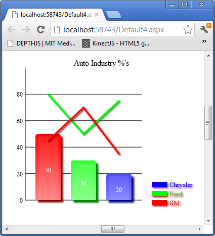
To add a tab control to your canvas you would make the following JavaScript call from your web page after the canvas element on which you mean to draw the tab control as follows:
var tabwindowid = createTabControl(elemId, 'tab1', 200, 60, 250, 100, highestDepth,
<'Tab 1', 'Tab 2', 'Tab 3'>, '#000000', 10, '10pt Ariel', '#C0C0C0',
'#D0D0D0', 1, '#6c6cde', 1, '#C0C0C0', '#D0D0D0', 0, 3, '#6c6cde', 1);
var tabp = getTabProps(elemId, tabwindowid);
registerChildWindow(elemId, createImage(elemId, 'i1', 250, 90, 50, 50, highestDepth,
'Madras.png', function () { alert('You clicked Madras.png'); }), tabp.PanelWindowIDs<0>);
registerChildWindow(elemId, createImage(elemId, 'i2', 250, 90, 50, 50, highestDepth,
'Bombay.png', function () { alert('You clicked Bombay.png'); }), tabp.PanelWindowIDs<1>);
registerChildWindow(elemId, createImage(elemId, 'i3', 250, 90, 50, 50, highestDepth,
'Pune.png', function () { alert('You clicked Pune.png'); }), tabp.PanelWindowIDs<2>);
The basic function call for creating a tab control is:
createTabControl(canvasid, controlNameId, x, y, width,
height, depth, tablabels, tablabelcolor, tablabelheight, tablabelfontstring, tablabelgradientstartcolor,
tablabelgradientendcolor, panelHasBorder, panelBorderColor, panelHasBackgroundGradient,
panelBackgroundStartColor, panelBackgroundEndColor, selectedTabID, gapbetweentabs,
selectedtabbordercolor, selectedtabborderlinewidth, tag)
The tablabels is an array of strings as each tab must have a name. The number of tabs is the length of the tablabels array in the order specified in the string list. The selectedTabID is the index into the tablabels array for the starting tab.
In the example the first thing you do is save the Window ID of the tab control in the example in a variable called tabwindowid. You then get all the properties of the tab by using getTabProps. Then for each control you want to add to a particular tab you call registerChildWindow. This function takes the canvas id name as first parameter, the second parameter is the Window ID of the child controls window which in the case of the example is a direct call to create an image control and the last parameter is the tablabels array tab index into the PanelWindowIDs property of the tab properties you received. Because each tabs control area is a panel which the tab maintains by changing its hidden status on clicking the tab label header. In the case of the example you can check that only the image for that particular tab is shown plus when clicked it gives the correct alert for the image clicked on the tab control.
A screenshot of the example follows below:

To add a image map control to your canvas you would make the following JavaScript call from your web page after the canvas element on which you mean to draw the image map control as follows:
createImageMapControl(elemId, 'im1', 250, 200, 200, 150, highestDepth, 'indiamap.gif',
<<134, 261, 10, '#00FF00'>, <219, 291, 7, '#FF0000'>, <248, 361, 10, '#0000FF'>>,
function (c, w, i) { alert("You clicked on " + (i == 0 ?
"Mumbai" : (i == 1 ? "Hyderabad" : "Chennai"))); }, 1, 90, 240, 1, 0.1);
The basic function call for creating a image map control is:
createImageMapControl(canvasid, controlNameId, x, y, width,
height, depth, imgurl, pinxys, pinClickFunction, hasZoom, imagetopleftxoffset,
imagetopleftyoffset, scale, scaleincrementfactor, tag)
The first thing of course is to supply a url to load the image from. In this case I use an India map since I am from that country however you can use any image does not have to be a map that you need to put pins or pan and zoom. The pinxys is an array in which each element of the array is pinClickFunction is invoked when the user clicks a pin and you are supplied with the standard canvas id and window id and an index i into the pinxys array. In the case of the example I make it simple by just saying the name of the city whose pin you clicked on. If hasZoom is 1 then you will be able to zoom in and out with the mouse wheel. This will work with any browser such as Google Chrome which supports onmousewheel event which is what I use. The imagetopleftxoffset and imagetopleftyoffset is the point on the image to start showing the portion of the image in the window at startup. Again it follows the rules of pinxys co-ordinates. Scale is whatever scale you want to startup with if the scale is too small or your starting window into the image is off image you will not see an image at all so be careful and pick meaningful values i.e. ones which will crop a portion on the image without going off it. The scaleincrementfactor is by how much per mouse wheel move do you want to zoom in and out so in the example I choose 0.1 so it scales slowly on mousewheel as my image for the example is not very large.
A screenshot of the example follows below:

To add a menu bar control to your canvas you would make the following JavaScript call from your web page after the canvas element on which you mean to draw the menu bar control as follows:
createMenuBarControl(elemId, 'mb1', 0, 0, 800, 20, highestDepth, <<'File', '#000000', 10,
'10pt Ariel', 0, null, <<'Save', '#000000', 10, '10pt Ariel', 0,
function () { alert('You choose Save from the menu.'); },
null>, <'Save As', '#000000', 10, '10pt Ariel', 0,
function () { alert('You choose Sava As from the menu'); },
null>, <'Options', '#000000', 10, '10pt Ariel', 0, null,
<<'Advanced', '#000000', 10, '10pt Ariel', 0,
function () { alert('You choose Advanced from the menu'); },
null>, <'Configuration', '#000000', 10, '10pt Ariel', 0,
function () { alert('You choose Configuration from the menu'); },
null>>>>>, <'Help', '#000000', 10, '10pt Ariel', 0,
function () { alert('You choose Help from the menu'); }, null>>,
'#bec7ff', '#848ec9', '#515eac', '#e3e7ff', '#c5cdff', 0);
The basic function call for creating a menu bar control is:
createMenuBarControl(canvasid, controlNameId, x, y, width, height,
depth, data, barcolorstart, barcolormiddle, barcolorend,
dropdowncolorstart, dropdowncolorend, orientation, tag)
The data format is complex because each item in the menu's text can be configured to any font and size specification. Basically each menu item is defined as an array whose first element is the text label to display in the menu. The second element is the color of the text. The third element is the height of the text. The fourth element is the font specification. The fifth element always set it to 0 as it is used internally by the code to determine if the menu items sub menu if any is to be displayed. The fifth element is the function to invoke when the user clicks the menu item. The sixth and final element is an array of the same menu item element arrays as defined here. If the item has no sub menu with child menu items then set this sixth parameter to null. The orientation parameter is not implemented as yet but that allows for menu bars on the bottom and sides when implemented.
A screenshot of the example menu bar with a sub menu item clicked on is shown below:

To add a textbox control to your canvas you would make the following JavaScript call from your web page after the canvas element on which you mean to draw the textbox control as follows:
createTextBox(elemId, 'textbox1', 400, 10, 300, 60, highestDepth, 'Type your name here',
'#F0F0F0', 18, '18pt Ariel', '#051329', 18, '18pt Ariel', 50, '+', 0, null, 1, '#2e3642', 1, 0,
'#000000', 3, 3, 20, 1, 10, 1, '#9bacc6', '#d6e4f9',
0, null, 0, null, 0, 0, 0, null, '', '#0d2952', '#0000F0', 1);
The basic function call for creating a textbox control is:
createTextBox(canvasid, controlNameId, x, y, width, height, depth,
waterMarkText, waterMarkTextColor, waterMarkTextHeight, waterMarkTextFontString, textColor,
textHeight, textFontString, maxChars, allowedCharsRegEx, isPassword, passwordChar, hasBorder,
borderColor, borderLineWidth, hasShadow, shadowColor, shadowOffsetX, shadowOffsetY, shadowBlurValue,
hasRoundedEdges, edgeRadius, hasBgGradient, bgGradientStartColor, bgGradientEndColor, hasBgImage,
bgImageUrl, hasAutoComplete, listPossibles, dropDownPossiblesListIfThereIsInputText, limitToListPossibles,
listPossiblesTextHeight, listPossiblesTextFontString, initialText,
caretColor, textSelectionBgColor, hasFocusInitially)
The Watermark properties define what the textbox will look like when it is empty which will display the watermark message. The Text properties are information on how to draw the text the user types into the textbox. The maxChars limits how many chars you can type in. The allowedCharsRegEx is a regular expression against which whatever the user types will be checked character by character. If its an invalid character it wont effect the value of the text. The Password properties are if the text should be hidden and what letter to use. The border properties are used to draw a border around the textbox. The Shadow doesnt work right now but is meant to put a dropdown shadow for the control. The Edge properties define if the textbox will have rounded corners. The gradient properties define if you want a gradient for the background of the textbox. You can use the image properties to insert an image into the background of the textbox. The auto completion parameters limit the user optionally to only type values of text from the given array of strings. The initialText can be supplied with some text to initially display as though the user typed it. The caretColor is the color used to paint the caret. The selectionColor is used to paint the background of the selection. If you want this text box to have focus on the form initially set the hasFocusInitially to 1.
Screen shot of the example text with no user input:

Screen shot of the example with my name typed into the textbox:

To add a image fader control to your canvas you would make the following JavaScript call from your web page after the canvas element on which you mean to draw the image fader control as follows:
createImageFader(elemId, 'MoviePosters', 500, 200, 135, 200, highestDepth, <'fantastic_four.jpg',
'IncredibleHulk.jpg', 'Thor.jpg', 'xmen_first_class.jpg'>, 0, 1, 0.01, 100, function (canvasid, windowid, e, i)
{ var imageFaderProps = getImageFaderProps(canvasid, windowid); alert(imageFaderProps.ImageURLs); }, 1);
The basic function call for creating a image fader control is:
createImageFader(canvasid, controlNameId, x, y, width, height, depth,
imageURLs, fadeStartValue, fadeEndValue, fadeStepValue, holdForTicks, clickFunction, overlayimages)
The imageURLs is an array of URL's to the images to display. The fadeStart value is an alpha number which is between 0 and 1 and determines the extent to which the image is faded out before the next image is displayed. The fadeEndValue is again between 0 and 1 and this is the maximum or final alpha value the image will be displayed at. The fadeStepValue is how to increment which basically determines the fade rate of the image i.e. how fast or slow it will fade. The holdForTicks is the number of ticks draw calls the picture will display at maximum alpha which in my example is completely opaque 1. The clickFunction is your custom code to do when the current image is clicked in the example I alert the URL of the image that was clicked on basically given access to the properties and the index of the image which is current which was clicked you can do anything including a server side postback. The overlayimages is 1 if you want the previous image to fade smoothly out into the current or next image.
To add a image slider control to your canvas you would make the following JavaScript call from your web page after the canvas element on which you mean to draw the image slider control as follows:
createImageSlider(elemId, 'MoviePosters2', 500, 500, 135, 200, highestDepth,
<'fantastic_four.jpg', 'IncredibleHulk.jpg', 'Thor.jpg', 'xmen_first_class.jpg'>,
1, -1, 100, function (canvasid, windowid, e, idx) { alert(idx.toString()); });
The basic function call for creating a image fader control is:
createImageSlider(canvasid, controlNameId, x, y,
width, height, depth, imageURLs, direction, stepIncrement, holdForTicks, clickFunction)
The imageURLs is an array of URL's to the images to display. The direction is either 1 or 0. If it is 1 then it will slide the images sideways if it is 0 it will slide the images vertically. If stepIncrement is positive and direction is 1 then it will slide rightways if it is negative then will slide leftways. If stepIncrement is positive and direction is 0 then it will slide it bottom to top and if negative top to bottom. The holdForTicks is the number of ticks to hold the image before it begins to slide again. In the example clickFunction an alert message is displayed with the index of the image which is index into imageURLs array.
Boundary Fillable Map Control :
To add a boundary fillable map control to your canvas you would make the following JavaScript call from your web page after the canvas element on which you mean to draw the boundary fillable map control as follows:
createBoundaryFillableMap(elemId, 'bfm1', 10, 420, 500, 389, highestDepth, <<95, 155,
40, 130, 160, 185, 255, 255, 255, 255, 0, 0, 255, 255>, <338, 180, 320, 160, 360,
205, 255, 255, 255, 255, 0, 255, 0, 255>>, 'WorldMap.png', 500, 389);
The basic function call for creating a image fader control is:
createBoundaryFillableMap(canvasid, controlNameId, x, y, width,
height, depth, fillpoints, imgurl, imgwidth, imgheight)
The fillpoints is an array of arrays. Each array has the format of the first 2 elements being the x, y co-ordinates on the map to start filling at. The next 2 elements are the x, y co-ordinates top left corner of the bounding box within which to do the filling and of course the next 2 elements are the x, y co-ordinates of the bottom right hand corner of the bounding box. The next 4 elements is the RGBA in 0 to 255 values of the original color and of course the next 4 elements are the RGBA color to replace it with. The image WorldMap.png is an outline drawing with countries borders lined out and my image was otherwise white background. Of course the filling algorithm is available in a seperate function should you want to combine this with any control if you so choose to. Since there is already a map control which is scalable, zoomable and with pins and labels I did not make this map control do all that as it can be easily combined if you read the code.
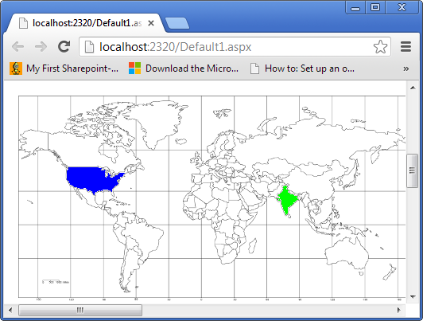
If you want to do partial fills then the fillpoints array element has an additional 3 elements the first is orientation which if 0 fills horizontally along x in which case of course the next to elements are the x minimum and x maximum to fill upto. Be careful with the number since I am giving you full control you must know your points within the image or it will lead to unknown results. Similarly if orientation is 1 then next element is y minimum and thereafter y maximum. Basically the starting point you provide for you partial fill should be between the bounds horizontal x minimum and x maximum or vertical y minimum and y maximum or it will produce unknown results.
The following example is how to fill horizontally from left to right for america only in blue color:
createBoundaryFillableMap(elemId, 'bfm1', 800, 400, 500, 389, highestDepth,
<<95, 155, 40, 130, 160, 185, 255, 255, 255, 255, 0, 0, 255, 255, 0, 40, 100>,
<338, 180, 320, 160, 360, 205, 255, 255, 255, 255, 0, 255, 0, 255>>,
'WorldMap.png', 500, 389);
The following is the example generated image:
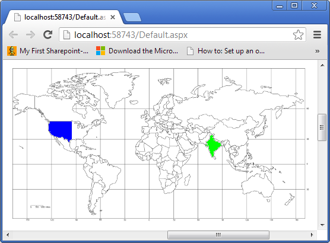
The following example is how to fill horizontally from right to left for america only in blue color:
createBoundaryFillableMap(elemId, 'bfm1', 800, 800, 500, 389, highestDepth,
<<95, 155, 40, 130, 160, 185, 255, 255, 255, 255, 0, 0, 255, 255, 0, 100, 160>,
<338, 180, 320, 160, 360, 205, 255, 255, 255, 255, 0, 255, 0, 255>>, 'WorldMap.png', 500, 389);
The following is the example generated image:
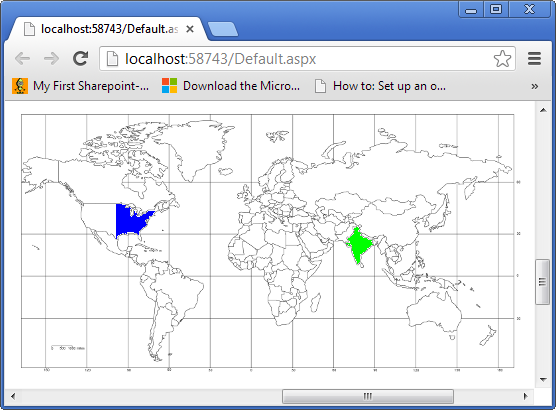To add a multi line label control to your canvas you would make the following JavaScript call from your web page after the canvas element on which you mean to draw the multi line label control as follows:
createMultiLineLabel(elemId, 'mll1', 250, 400, 200, highestDepth, 0,
'This is a very long sentance to test word wrap. My name is \nAkshay Srinivasan\n and ' +
'this is a multi line label control demo. It is a control that is one of the many controls ' +
'in Canvas Control Library which is a system of building web pages that has been made ' +
'possible by the new HTML5 element called canvas.', '#000000', 12, '12pt Ariel', 5, 1);
createMultiLineLabel(elemId, 'mll1', 250, 800, 200, highestDepth, 1,
'<NT>This is a </NT><N><C>#FF0000</C><F>16pt ' +
'Ariel</F><T>very long</T></N><NT> sentance to test word wrap. ' +
' My name is </NT><N><C>#00FF00</C><F>bold italic 14pt Tahoma<' +
'/F><T>\nAkshay Srinivasan\n</T></N><NT> and this is a multi line label ' +
'control demo. It is a control that is one of the many controls in Canvas Control Library which' +
' is a system of building web pages that has been made possible by the new </NT><N>' +
'<C>#0000FF</C><F>10pt Ariel</F><T>HTML5</T></N><NT>' +
' element called canvas.</NT>', '#000000', 16, '12pt Ariel', 5, 1);
The basic function call for creating a multi line label control is:
createMultiLineLabel(canvasid, controlNameId, x, y, width,
depth, hasMarkup, text, textColor, textHeight, textFontString, lineSpacingInPixels, wordSensitive)
This control auto determines the height so this is one of the few controls where you don't specify the height. The hasMarkup if set to 0 will then render the text parameter as is. If it is set to 1 then it will assume you have markup in the text parameter which is a bunch of tags which you can see in the second example:
lineSpacingInPixels is the gap between the lines to add. The wordSensitive parameter if set to 1 will take a word which is too long to fit at the end of the line and look for the space before it and break it at that point onto a new line. If this is set to 0 then words will break in the middle on a new line with no dash.
This control allows you to now be able to make regular paragraph like text without resorting to regular HTML5 text so that you can stay within the system.
Screenshot of simplex text (not marked up) follows:
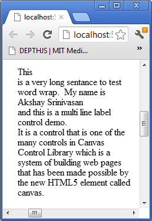
Screenshot of marked up text that is text with different font metrics and colors:
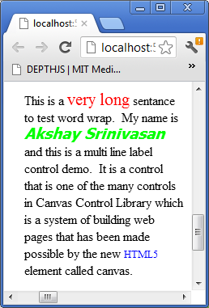
To add a word processor control to your canvas you would make the following JavaScript call from your web page after the canvas element on which you mean to draw the word processor control as follows:
createWordProcessor(elemId, 'Wp1', 800, 400, 400, 224, highestDepth, 0, '',
'#051329', 12, '12pt Ariel', 5, 1, 'Type a paragraph here.', '#F0F0F0', 14, '14pt Ariel',
2000, 0, '#000000', 1, 1, 1, 10, 1, '#9bacc6',
'#d6e4f9', 0, null, 10, 1, '#2e3642', 1, '.+', '#0d2952');
The basic function call for creating a word processor control is:
createWordProcessor(canvasid, controlNameId, x, y, width, height,
depth, hasMarkup, text, textColor, textHeight, textFontString,
lineSpacingInPixels, wordSensitive,
waterMarkText, waterMarkTextColor, waterMarkTextHeight,
waterMarkTextFontString, maxChars, hasShadow,
shadowColor, shadowOffsetX, shadowOffsetY, hasRoundedEdges, edgeRadius, hasBgGradient,
bgGradientStartColor, bgGradientEndColor, hasBgImage, bgImageUrl, margin, hasBorder,
borderColor, borderLineWidth, allowedCharsRegEx, caretColor)
The word processor control is essentially a multi line text box. As of now marked up text is not available so hasMarkup has to be 0 until the markup code is functioning. So it is plain text as defined by the textColor, textFontString metrics supplied. Works much like textbox control but is multi line instead of just single line. In the example I allow any characters by setting allowedCharsRegEx to .+. One of the limitations is that the height of the word processor/multi line textbox has to be for optimal presentation results a multiple of double the margin plus number of lines multiplied by the sum of text height plus the line spacing in pixels.
Screenshot of the word processor control blank (no user input) with watermark text displayed:
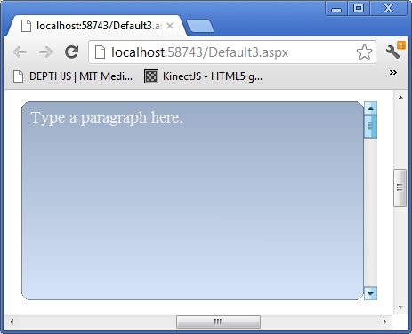
Screenshot of the word processor with a paragraph of user inputted text:
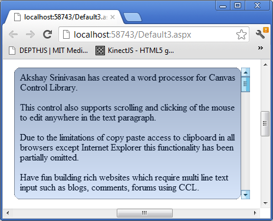
To add a virtual keyboard control to your canvas you would make the following JavaScript call from your web page after the canvas element on which you mean to draw the virtual keyboard control as follows:
createVirtualKeyboard(elemId, 'vkb1', 500, 600, 360, 180, highestDepth, null,
function (c, w, l) { alert(l); }, 5, 5, 1, 12, '12pt Ariel');
The basic function call for creating a virtual keyboard control is:
createVirtualKeyboard(canvasid, controlNameId, x, y,
width, height, depth, keys, keypressFunc, gapbetweenbuttons, gapbetweenrows, hasgloss,
textheight, textfontstring, customDrawLetterFunc)
The virtual keyboard control has an array keys which defines the keys the keyboard will layout for you. A key is defined as an array in which the letter is first element, then width of the key, height of the key and optionally an index to another keyboard. A keyboard array is an array of rows which holds arrays of keys as defined previously. The keys array is finally an array of keyboard arrays. So this way you can index into your keyboard array to have special keys that switch keyboards. I recommend as in the example you pass in null for keys which will get you the default keyboard. The example defines a simple keypress function which alerts the letter of the key pressed on the virtual keyboard.
A screenshot of the virtual keyboard is shown below:
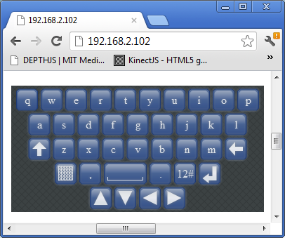
Screenshot of virtual keyboard after '12#' button is pressed which indexes off to another layout for the virtual keyboard is shown below:
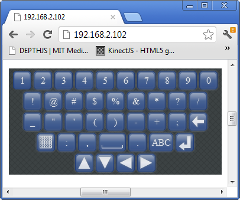
Additionally checking goes on for textbox and word processor control if the browser is on a Android or iPhone/iPad/iPod and will display accordingly. However caution is to be taken when using this as response on old devices such as iPad2 and even an HTC Sensation XL Android phone is bad. Maybe on more powerful devices such as Samsung Galaxy S3 and iPhone 5 it might be usable. But I do not have access or the means to purchase these platforms so some feedback from the lucky ones to own the more powerful smartphones and tablets would be nice. The problem I think is that the Javascript engine in these mobile devices browsers is not fast enough or just that processor cannot handle crunching another layer of abstraction Javascript in the mobile browser.
The new window drawing system has much improved response on my iPad2 and HTC Sensation XL Android phone is now acceptable usability wise though it is not as fast and responsive as the native browser HTML5 elements or the native keyboard.
To add a splitter control to your canvas you would make the following JavaScript call from your web page after the canvas element on which you mean to draw the splitter control as follows:
var panelwindowid = createPanel(elemId, 'p1', 0, 0,
200, 200, highestDepth, 1, '#c8c8c8', 1, '#d1ddff', '#a7afc6');
registerChildWindow(elemId, createProgressBar(elemId, 'pg1', 10, 100,
200, 20, highestDepth, '#33ec25', 100, 0, 60), panelwindowid);
registerChildWindow(elemId, createSlider(elemId, 's1', 10, 150, 200,
20, highestDepth, 10, 100, 0, 50), panelwindowid);
var panelwindowid2 = createPanel(elemId, 'p2', 204, 0, 200, 200,
highestDepth, 1, '#c8c8c8', 1, '#d1ddff', '#a7afc6',
1, 150, 0, 'Test Panel', '#000000', 12, '12pt Ariel',
'#cfcfcf', '#ababab', 20, '#495be5', 1, 7);
registerChildWindow(elemId, createProgressBar(elemId, 'pg2', 210, 10,
200, 20, highestDepth, '#33ec25', 100, 0, 60), panelwindowid2);
registerChildWindow(elemId, createSlider(elemId, 's2', 210, 100, 200,
20, highestDepth, 10, 100, 0, 50), panelwindowid2);
createSplitter(elemId, 'spl1', 201, 0, 3, 200, highestDepth, '#D0D0D0');
The basic function call for creating a splitter is:
function createSplitter(canvasid, controlNameId, x, y, width, height, depth, linecolor)
The splitter is a line that sits between some windows horizontally or vertically. If width is greater than height it means its a horizontally aligned splitter. What the splitter will do is it will figure out what windows are within 2 pixels of its line and adjust their width or origin as the splitter is dragged.
To add a simple XML viewer control to your canvas you would make the following JavaScript call from your web page after the canvas element on which you mean to draw the simple XML viewer control as follows:
createSimpleXMLViewer(elemId, 'sxmlvr1', 10, 500, 200, 250, highestDepth,
'<root><Databases><Employees><Tables><Employee><Column
ColumnName="id">1</Column><Column
ColumnName="FirstName">Akshay</Column><Column
ColumnName="MiddleName"></Column><Column
ColumnName="LastName">Srinivasan</Column><Column
ColumnName="EmpId">42312345672892</Column></Employee>
</Tables></Employees></Databases></root>',
'#000000', '12pt Ariel', 12, null, null, 1, 16, 16, 'Node.png',
'Value.png', 'Attribute.png');
The basic function call for creating a simple XML viewer is:
function createSimpleXMLViewer(canvasid, controlNameId, x, y, width, height,
depth, xml, textcolor, textfontstring, textheight, clickNodeFunction,
tag, hasicons, iconwidth, iconheight, imgURLNode, imgURLValue, imgURLAttribute)
The simple XML viewer control at its bases uses the treeview control to accept some XML supplied by the user and draw it out as a tree. There is an example in the download of this which works. The XML must start with <root> tag and end with </root> tag basically well formed XML that is understood by the DOMParser in javascript is all it supports.
A screenshot of the code example follows:
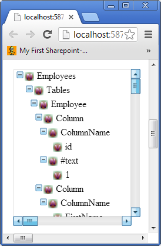
To add a voting control to your canvas you would make the following JavaScript call from your web page after the canvas element on which you mean to draw the voting control as follows:
createVotingControl(elemId, 'vc1', 450, 150, 300, 30, highestDepth,
5, 10, 59, 172, 53, 255, 0, 5, 1, 0, 1, 180, 21, '#000000', '12pt Ariel',
12, 0, 0, 6.7, 1, 0, 0, 1, 'duckoutline.png', <15, 13, 0, 0, 30, 26, 255,
255, 255, 255, 59, 172, 53, 255>, 30, 26, 0, 255, 255, 255, 255);
createVotingControl(elemId, 'vc2', 450, 200, 300, 30,
highestDepth, 5, 5, 213, 210, 0, 255, 30, 5, 1, 1, 1, 180, 21, '#000000',
'12pt Ariel', 12, 0, 0, 3.5, 1, 0, 0, 0, null, null, 30, 30, 0, 0, 0, 0, 0,
function (canvasid, windowid, votingProps, clickx, clicky, value) {
votingProps.InitialValue = value; invalidateRect(canvasid, null,
votingProps.X, votingProps.Y, votingProps.Width, votingProps.Height); });
createVotingControl(elemId, 'vc3', 450, 250, 300, 30, highestDepth, 5, 5, 59, 172, 53, 255, 0, 5, 1, 1, 1, 180, 21, '#000000', '12pt Ariel', 12, 0, 0, 0.5, 1, 0, 0, 1, 'staroutline.png', <8, 8, 0, 0, 30, 26, 255, 255, 255, 255, 59, 172, 53, 255>, 17, 17, 0, 255, 255, 255, 255, function (canvasid, windowid, votingProps, clickx, clicky, value) { votingProps.InitialValue = value; invalidateRect(canvasid, null, votingProps.X, votingProps.Y, votingProps.Width, votingProps.Height); }, 1);
function createVotingControl(canvasid, controlNameId, x, y, width,
height, depth, numstars, maxvalueofallstars, starcolorred, starcolorgreen,
starcolorblue, starcoloralpha, starsizeinpixels, spacinginpixelsbetweenstars,
haspartialstars, editable, hasvaluelabel, labelxpos, labelypos, labeltextcolor,
labeltextfontstring, labeltextheight, starsstartingposoffsetwhenlabel,
starsyposwhenlabel, initialvalue, outlinethicknessofemptystar, starsorientation,
fillorientation, iscustompattern, outlineimgurl, customfillpoint, imgwidth,
imgheight, hasmouseoverlabel, staroutlinebgcolorred, staroutlinebgcolorgreen,
staroutlinebgcolorblue, staroutlinebgcoloralpha, customclickfunction,
rounddisplayedvaluetonumofdecimals)
The parameter numstars is the number of shapes you want shown. Maxvalueofallstars if the total values of all stars being filled value. Then the color to fill the shape/stars with is provided in rgba. If you are using standard star then the size of the star its width and height are same by default. Then the spacing between shapes/stars drawn is provided. If you are partial filling a star for a fractional value then this will be 1 if not 0. One of the things to note about partial complex shape filling is that when filling horizontally the middle of the image should be completely within the outline shape provided for standard star this is the case. For the duck outline I have used what would be more appropriate is that the graphics artist raised one leg of the duck along the middle horizontal. Editable basically means clickable and value changeable on clicking. The next parameters defines the label which will be 'value out of max value of all stars'. If you want to offset the starting position of drawing the stars then provide something other than 0 for this parameter. Initialvalue is just the value to start with for filling the stars/complex shape. If you want a thicker outline line for empty stars then provide something greater than 1. Starorientation is how to draw out the stars 0 means horizontally 1 means vertically. Fillorientation is how to fill a star horizontally 0 vertically 1. Iscustompattern means you are going to provide an image with an outline shape like my duck example. Customfillpoint is defined in BoundaryFillableMap so refer there on how to construct the array. Basically you provide the point within an empty shape to fill your complex shape. Then the width and height of the image. Then the rgb value of the background color. If you want to do something custom on clicking pass in your custom click function here. Then how many decimals to round the displayed value if there is a label.
Screenshot for the examples above in that order top to bottom:
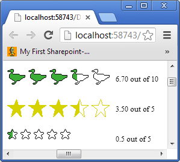
The new system of drawing out the windows is not to draw all the windows on the canvas over but to use the function invalidateRect to invalidate an area. All windows then falling in that area are the only ones redrawn. This change is reflected in the new animation system as well as only the animated window will be redrawn to this effect you have to supply a windowid now to the registerAnimatedWindow function call. This makes though your code more complex as can be seen in the FormsBases.aspx example which is now has more complex code logic to redraw effected windows which the system would not know got changed.
Example of a customized ComboBox Control with Pictures in the dropdown :
The following HTML creates an example of a ComboBox control with pictures in the dropdown area:
<canvas id="canvas1" width="500"
height="500" tabindex="0"></canvas>
<script type="text/javascript">
registerCanvasElementId('canvas1');
createComboBox('canvas1', 'cb1', 10, 10, 150, 20, highestDepth,
<'Bombay', 'Pune', 'Madras', 'Delhi'>, null, null, drawListAreaCustom, null,
listAreaCustomClickFunction, '#364635', 10, '10pt Ariel', '#1b213b', 10, '10pt Ariel');
invalidateRect(elemId, null, 0, 0, 500, 500);
function drawListAreaCustom(canvasid, windowid) {
var comboboxProps = getComboboxPropsByListAreaWindowId(canvasid, windowid);
var vscrollBarProps = getScrollBarProps(canvasid, comboboxProps.VScrollBarWindowID);
var ctx = getCtx(canvasid);
ctx.fillStyle = '#FFFFFF';
ctx.beginPath();
ctx.rect(comboboxProps.X, comboboxProps.Y + comboboxProps.Height, comboboxProps.Width - 15, 100);
ctx.fill();
ctx.fillStyle = comboboxProps.ListAreaTextColor;
ctx.font = comboboxProps.ListAreaFontString;
for (var i = vscrollBarProps.SelectedID; i <
comboboxProps.Data.length && ((comboboxProps.ListAreaTextHeight + 10) *
(i - vscrollBarProps.SelectedID + 1)) + 4 < 100; i++) {
switch (comboboxProps.Data) {
case 'Bombay':
drawCustomImage(ctx, comboboxProps.X, comboboxProps.Y + 4 +
((comboboxProps.ListAreaTextHeight + 10) *
(i - vscrollBarProps.SelectedID + 1)), 16, 16, 'Bombay.png');
break;
case 'Pune':
drawCustomImage(ctx, comboboxProps.X, comboboxProps.Y + 4 +
((comboboxProps.ListAreaTextHeight + 10) *
(i - vscrollBarProps.SelectedID + 1)), 16, 16, 'Pune.png');
break;
case 'Madras':
drawCustomImage(ctx, comboboxProps.X, comboboxProps.Y + 4 +
((comboboxProps.ListAreaTextHeight + 10) *
(i - vscrollBarProps.SelectedID + 1)), 16, 16, 'Madras.png');
break;
case 'Delhi':
drawCustomImage(ctx, comboboxProps.X, comboboxProps.Y + 4 +
((comboboxProps.ListAreaTextHeight + 10) *
(i - vscrollBarProps.SelectedID + 1)), 16, 16, 'Delhi.png');
break;
}
ctx.fillText(comboboxProps.Data, comboboxProps.X + 20, comboboxProps.Y + 17 +
((comboboxProps.ListAreaTextHeight + 10) * (i - vscrollBarProps.SelectedID + 1)));
}
ctx.strokeStyle = '#b7bfc8';
ctx.beginPath();
ctx.rect(comboboxProps.X, comboboxProps.Y +
comboboxProps.Height, comboboxProps.Width - 15, 100);
ctx.stroke();
}
var preloadedImages = new Array();
function drawCustomImage(ctx, x, y, width, height, src) {
for (var i = 0; i < preloadedImages.length; i++) {
if (preloadedImages.Src == src) {
ctx.drawImage(preloadedImages.Image, x, y);
return;
}
}
var image = new Image(width, height);
image.src = src;
image.onload = function () {
preloadedImages.push({ Src: src, Image: image });
ctx.drawImage(image, x, y);
};
}
function listAreaCustomClickFunction(canvasid, windowid, e) {
var comboboxProps = getComboboxPropsByListAreaWindowId(canvasid, windowid);
var vscrollBarProps = getScrollBarProps(canvasid, comboboxProps.VScrollBarWindowID);
var canvas = getCanvas(canvasid);
var x = e.calcX;
var y = e.calcY;
for (var i = vscrollBarProps.SelectedID; i < comboboxProps.Data.length &&
((comboboxProps.ListAreaTextHeight + 10) * (i - vscrollBarProps.SelectedID + 1)) < 100; i++) {
if (x > comboboxProps.X && y > comboboxProps.Y + 4 + comboboxProps.Height +
((comboboxProps.ListAreaTextHeight + 10) * (i - vscrollBarProps.SelectedID)) &&
x < comboboxProps.X + comboboxProps.Width - 15 && y < comboboxProps.Y +
comboboxProps.Height + 4 + ((comboboxProps.ListAreaTextHeight + 10) *
(i - vscrollBarProps.SelectedID + 1))) {
comboboxProps.SelectedID = i;
setHiddenWindowStatus(canvasid, comboboxProps.VScrollBarWindowID, 1);
setHiddenWindowStatus(canvasid, comboboxProps.ListAreaWindowID, 1);
draw(canvasid);
return;
}
}
}
</script>
The above JavaScript uses 4 images by the name of Bombay.png, Pune.png, Madras.png, Delhi.png. You can use any images with different file names long as you change the image URLs in the switch case statement in function drawListAreaCustom.
A screenshot of the above example follows:

How to use the new Forms Based System :
The current concept on how forms work with web pages is that when you click for example a button that requires a post back to do something on the server side what will happen with regular web page technology is that all the controls values will be sent to the server plus in the case of ASP.NET viewstate the state of the controls as well. The control values will be unwrapped by the PHP or ASP.NET module and a php or aspx server side page and function will be invoked in which your code will make some changes. Then a whole new web page is sent back to the client web browser.
In this new system I have invented what happens is that when you do something with a control for example a button that requires some code to be executed on the server side all the controls state and values are wrapped up and sent across to the server side in an AJAX call which goes to an ASP.NET web page which has included the CanvasControlLibrary.cs file that has all the support. Your C# function whose name you provide is invoked you make all the changes to the control values and states in the example change the text of a label. Then all the controls state and values are wrapped up in XML and sent back to the same page the client browser is on since its an AJAX call and then unwrapped replacing all the old values of the control states and values with the new ones you changed server side. The UI is redrawn and the changes you made to the controls reflected on the same web page. The client never leaves the web page on a post back to the server side to go to another web page which is the normal practice.
So here is the client side code which is a button that invokes a server side C# function on an aspx page:
createLabel(elemId, 'l1', 150, 10, 100, 20, 'Label 1', '#000000', 12, '12pt Ariel', null, highestDepth);
createButton(elemId, 'b3', 30, 74, 250, 40,
'Custom Click Function', '#0000FF', 12, '12pt Ariel',
2, highestDepth + 1, function (canvasid, windowid)
{ invokeServerSideFunction('AjaxEx1.aspx', 'ClickMe',
elemId, windowid, function () { alert('Did Postback'); }); },
null, '#bee6fd', '#a7d9f5', '#eaf6fd', '#d9f0fc', '#3c7fb1');
The code on the server side is pretty simple and follows below:
public partial class Default2 : System.Web.UI.Page
{
CanvasControlLibrary ccl;
protected void Page_Load(object sender, EventArgs e)
{
ccl = new CanvasControlLibrary(Request.InputStream);
ccl.InvokeServerSideFunction(this.Page);
ccl.SendVars(Response.OutputStream);
}
protected override void Render(HtmlTextWriter writer)
{
}
public void ClickMe(string canvasid, int windowid)
{
CanvasControlLibrary.CCLLabelProps lp =
ccl.getControlPropsByControlNameID("l1") as CanvasControlLibrary.CCLLabelProps;
lp.Text = "Did Postback";
}
}
The label declaration in JavaScript function call is normal. The button on the other hand when it is clicked calls a JavaScript function called invokeServerSideFunction in which all the magic of a post back happens. The function first parameter is the name of web page on which your server side code is at. The next is the name of the function on the aspx page to invoke server side. The third and fourth parameters are just the canvas id and the window id to identify on the server side which control raised the event on the client side. The fifth is a JavaScript function which you code that will be invoked after the post back is completed so you can make further changes on the client side if you wish.
On the server side aspx page in your page load event you have call the server side class and then after it is instantiated invoke the server side function which is the ClickMe C# function on the page. In this example a simple call to get the label control and change its text value to Did Postback. Then you invoke the canvas control library server side class to send all your changes back to the client.
When you download and run the example on clicking the button the label is changed server side from showing text Label 1 to Did Postback. I have kept the example very simple but with this system you can create fully functional pages. In the case of wanting forms all you do is have a startup panel with your controls on it. When you click the button and submit all the information gathered you keep a second panel with all the controls on it which is the form you show and hide the first form. With this ability you can build fully functional web pages with server side post back custom code and build any current form based web pages in the new Canvas Control Library.
A diagram of the basic concept of the system follows below:
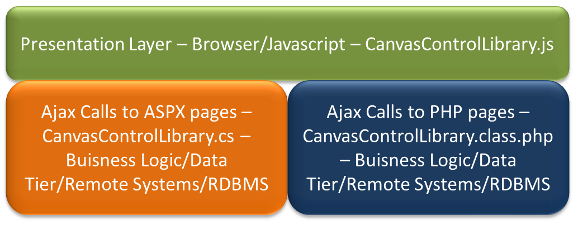
This example has been tested on Apache and IIS. This is the same as the simple ClickMe example but in PHP instead of C# ASPX page handling the server side postback:
<?php
include 'CanvasControlLibrary.class.php';
$parameters = array();
$ccl = new CanvasControlLibrary();
$ccl->InvokeServerSideFunction();
$ccl->SendVars($parameters);
function ClickMe($obj, $canvasid, $windowid)
{
$lp = $obj->getControlPropsByControlNameID("l1");
$lp->Text = "Did Postback";
}
?>
It uses pretty much the same page Default.php as Default.aspx as there is no PHP or C# code in either. When you click the button the postback happens to code listed above. Here all the stuff is done in PHP class file so you have to include it. You instantiate the library as a class object and do pretty much the same as in the server side ASPX page. Again only a label is changed for the demo.
An example of a working form with postback:
This example is a web page which uses the Canvas Control Library and its forms based system to create a simple web page for a fictional Cinemas called Fake Cinemas. There is a title image logo of the cinema theater company on the top of the page. There is a menu bar which has links to various other pages which at this point is not implemented to do anything. It has movie theaters in four cities in India which are Mumbai, Delhi, Bangalore, and Chennai. The purpose of the starting page is for the customer to select the city which then populates the names of the theaters in that city in then the customer selects the theaters. When the customer selects the multiplex images showing the posters of all the movies playing at the theater and show times is displayed. If you click on a show time label it gets highlighted and a textbox control and button for payment is added. The textbox control is for the number of tickets and only accepts numbers to be typed in it. When you fill it out and click the payment button it does a server side postback and a message is displayed telling you which theater, how many tickets, what movie name and showtime you have booked tickets for. Without further ado here is the client side code:
<script type="text/javascript">
var elemId = 'canvas';
var selecteCinemaWindowID;
registerCanvasElementId(elemId);
function cityChanged(canvasid, windowid, index) {
invokeServerSideFunction('AjaxEx1.aspx', 'onSelectCityChanged', canvasid, windowid, function () {
var wprops = getWindowProps(elemId, selecteCinemaWindowID);
invalidateRect(elemId, null, wprops.X, wprops.Y, wprops.Width, wprops.Height);
});
}
function onSelectCinema(canvasid, windowid, index) {
invokeServerSideFunction('AjaxEx1.aspx',
'onSelectCinemaChanged', canvasid, windowid, showMoviesForCinema);
}
function selectMovieTime(canvasid, windowid) {
var labelProps = getLabelProps(canvasid, windowid);
var labelWindowProps = getWindowProps(canvasid, windowid);
labelProps.BackGroundColor = '#899b0d';
var labelWindowIDS = new Array();
labelWindowIDS.push(createLabel(elemId, 'numTicketsLabel', 630, 220, 160, 30,
'Number of Tickets:', '#131aa3', 16, '16pt Ariel', null, highestDepth));
labelWindowIDS.push(createTextBox(elemId, 'numTicketsTextBox', 800, 220, 50, 30, highestDepth, 'No.',
'#F0F0F0', 12, '12pt Ariel', '#051329', 12, '12pt Ariel', 2, '<0-9>', 0, null, 1, '#2e3642',
1, 0, '#000000', 3, 3, 20, 1, 10, 1, '#9bacc6', '#d6e4f9', 0, null, 0, null,
0, 0, '#D0D000', 12, '12pt Ariel', '', '#0d2952', 'rgba(0, 0, 240, 0.2)', 1));
labelWindowIDS.push(createButton(elemId, 'PaymentButton', 875, 220, 100, 30,
'Book Tickets', '#0000FF', 12, '12pt Ariel', 2, highestDepth + 1, 1, 1,
function (canvasid, windowid) {
invokeServerSideFunction('AjaxEx1.aspx', 'DoPaymentForTickets', elemId, windowid, afterPayment);
}, null, '#bee6fd', '#a7d9f5', '#eaf6fd', '#d9f0fc', '#3c7fb1', labelWindowProps.ControlNameID));
for (var i = 0; i < controlNameIDs.length; i++) {
var window = getWindowByControlNameID(controlNameIDs);
if (window.ControlType == 'Label' && window.WindowCount != windowid) {
var labelProps2 = getLabelProps(canvasid, window.WindowCount);
labelProps2.BackGroundColor = null;
labelWindowIDS.push(window.WindowCount);
}
}
for (var i = 0; i < labelWindowIDS.length; i++) {
var wprops = getWindowProps(elemId, labelWindowIDS);
invalidateRect(elemId, null, wprops.X, wprops.Y, wprops.Width, wprops.Height);
}
}
function afterPayment(params) {
suspendDraw = 1;
for (var i = 0; i < controlNameIDs.length; i++) {
destroyControlByNameID(controlNameIDs);
}
controlNameIDs = new Array();
destroyControlByNameID('numTicketsLabel');
destroyControlByNameID('numTicketsTextBox');
destroyControlByNameID('PaymentButton');
destroyControlByNameID('label1');
destroyControlByNameID('label2');
destroyControlByNameID('selectCityComboBoxComboBoxTextArea');
destroyControlByNameID('selectCinemaComboBoxComboBoxTextArea');
suspendDraw = 0;
createLabel(elemId, 'PaymentMessageLabel', 10, 220, 1024, 30, params<0>,
'#131aa3', 16, '16pt Ariel', null, highestDepth);
invalidateRect(elemId, null, 0, 0, 1024, 768);
}
var controlNameIDs = new Array();
function showMoviesForCinema(params) {
suspendDraw = 1;
for (var i = 0; i < controlNameIDs.length; i++) {
destroyControlByNameID(controlNameIDs);
}
controlNameIDs = new Array();
suspendDraw = 0;
var xoffset = 0;
var labelWindowIDS = new Array();
for (var i = 0; i < params.length; i++) {
var windowid = createImage(elemId, 'Poster' + i.toString(), 10 +
xoffset, 300, 266, 200, highestDepth, params<0>);
controlNameIDs.push('Poster' + i.toString());
var timesoffset = 0;
for (var j = 1; j < params.length; j++) {
labelWindowIDS.push(createLabel(elemId, 'MovieTimeLabel' + j.toString() + 'Poster' +
i.toString(), 10 + xoffset + timesoffset, 510, 50, 20, params, '#cdc833',
12, '12pt Ariel', null, highestDepth, null, selectMovieTime, null, 1));
controlNameIDs.push('MovieTimeLabel' + j.toString() + 'Poster' + i.toString());
timesoffset += 70;
}
xoffset += 296;
}
for (var i = 0; i < labelWindowIDS.length; i++) {
var wprops = getWindowProps(elemId, labelWindowIDS);
invalidateRect(elemId, null, wprops.X, wprops.Y, wprops.Width, wprops.Height);
}
}
function form1() {
createImage(elemId, 'imgTitle', 312, 10, 400, 100, highestDepth + 1, 'Title.png');
createMenuBarControl(elemId, 'menuBar1', 0, 120, 1024, 60, highestDepth, <<'HOME', '#000000', 20,
'20pt Ariel', 0, null, null>, <'TICKETS', '#000000', 20, '20pt Ariel', 0, null, null>,
<'MOVIES', '#000000', 20, '20pt Ariel', 0, null, null>, <'CINEMAS', '#000000', 20, '20pt Ariel',
0, null, null>, <'TRAILERS', '#000000', 20, '20pt Ariel', 0, null, null>,
<'CONTACT US', '#000000', 20, '20pt Ariel', 0, null, null>>,
'#fdf2c0', '#f0cc75', '#d99839', '#e3e7ff', '#c5cdff', 0);
createLabel(elemId, 'label1', 10, 220, 50, 30, 'City',
'#131aa3', 16, '16pt Ariel', null, highestDepth);
createComboBox(elemId, 'selectCityComboBox', 75, 220, 200, 30, highestDepth, <'Cities'>, null,
null, null, null, null, '#131aa3', 16, '16pt Ariel',
'#131aa3', 16, '16pt Ariel', cityChanged);
createLabel(elemId, 'label2', 300, 220, 120, 30,
'Multiplex', '#131aa3', 16, '16pt Ariel', null, highestDepth);
selecteCinemaWindowID = createComboBox(elemId,
'selectCinemaComboBox', 400, 220, 200, 30, highestDepth,
<'Select a city first'>, null, null, null, null, null, '#131aa3', 16, '16pt Ariel',
'#131aa3', 16, '16pt Ariel', onSelectCinema);
return selecteCinemaWindowID;
}
var windowid = form1();
invokeServerSideFunction('AjaxEx1.aspx', 'InitializeForm1', elemId, windowid, null);
invalidateRect(elemId, null, 0, 0, 1024, 768);
</script>
What is going on in here is the first thing the canvas element is declared. Then the registerCanvasElementId function call JavaScript is invoked client side to initialize the Canvas Control Library system. The next thing a handy form creation function form1 is declared which creates an Image, MenuBar and 2 ComboBox controls one for the city and one for the theaters in the selected city. The function returns any valid windowid of one of the controls on it. The form1 is invoked and all the controls are instantiated. Then invokeServerSideFunction JavaScript function is called which called the server side AjaxEx1.aspx page via of course AJAX call and invokes on the ASP.NET page the C# function InitializeForm1. The next thing a JavaScript function cityChanged is declared which invokes another server side function on page AjaxEx1.aspx called onSelectCityChanged. When the user selects the multiplex then a server side call is made to onSelectCinemaChanged this sends back information in an array of the image urls of the posters along with show time information. This array is then passed to client side JavaScript function showMoviesForCinema. In here the first thing is we destroy any old controls displaying movie posters and show times for the last selection if any. We then proceed to create image control to display the first movie poster and then labels for each show time and iterate through the params array. We finally make a call to draw to show the new controls.
Now follows the code on the server side page AjaxEx1.aspx:
/*
Canvas Control Library Copyright 2012
Created by Akshay Srinivasan
This javascript code is provided as is with no warranty implied.
Akshay Srinivasan are not liable or responsible for any consequence of
using this code in your applications.
You are free to use it and/or change it for both commercial and non-commercial
applications as long as you give credit to Akshay Srinivasan the creator
of this code.
*/
using System;
using System.Collections.Generic;
using System.Linq;
using System.Web;
using System.Web.UI;
using System.Web.UI.WebControls;
using System.Text;
using System.IO.Compression;
using System.IO;
using System.Text.RegularExpressions;
using System.Xml;
using System.Reflection;
using System.Collections;
public partial class Default2 : System.Web.UI.Page
{
CanvasControlLibrary ccl;
ArrayList parameters = new ArrayList();
ArrayList movieIndexes = new ArrayList();
protected void Page_Load(object sender, EventArgs e)
{
movieIndexes = new ArrayList { new ArrayList { "Phoenix Mills",
new ArrayList { "Fantastic Four", "Ferris Bueller's Day Off",
"Incredible Hulk" } }, new ArrayList { "Juhu", new ArrayList { "Iron Man",
"Point Break", "Spider Man 2" } }, new ArrayList {"Nariman Point",
new ArrayList{"Spider Man 4", "Spider Man 3", "The Avengers"}},
new ArrayList{"Chitrapur",
new ArrayList{"Thor", "Wolverine", "X-Men First Class"}},
new ArrayList{"Khari Baoli",
new ArrayList{"GI Joe Rise of Cobra", "The Avengers",
"Wolverine"}}, new ArrayList{"Lakshmi Garden",
new ArrayList{"Thor", "Point Break", "Iron Man"}},
new ArrayList{"Gandhi Nagar", new ArrayList{"Spider Man 2",
"Incredible Hulk", "GI Joe Rise of Cobra"}}, new ArrayList{"Lake City",
new ArrayList{"The Avengers", "X-Men First Class", "Iron Man"}},
new ArrayList{"Rajaji Nagar",
new ArrayList{"Fantastic Four", "Wolverine", "Thor"}},
new ArrayList{"Harrington Road",
new ArrayList{"The Avengers", "X-Men First Class", "Iron Man"}},
new ArrayList{"Boat Club",
new ArrayList{"GI Joe Rise of Cobra",
"Spider Man 3", "Incredible Hulk"}},
new ArrayList{"Chetpet",
new ArrayList{"Thor", "Fantastic Four", "The Avengers"}}};
ccl = new CanvasControlLibrary(Request.InputStream);
ccl.InvokeServerSideFunction(this.Page);
ccl.SendVars(Response.OutputStream, parameters);
}
protected override void Render(HtmlTextWriter writer)
{
}
public void ClickMe(string canvasid, int windowid)
{
CanvasControlLibrary.CCLLabelProps lp =
ccl.getControlPropsByControlNameID("l1") as CanvasControlLibrary.CCLLabelProps;
lp.Text = "Did Postback";
}
public void InitializeForm1(string canvasid, int windowid)
{
CanvasControlLibrary.CCLComboBoxProps selectCityComboBox =
ccl.getControlPropsByControlNameID("selectCityComboBoxComboBoxTextArea")
as CanvasControlLibrary.CCLComboBoxProps;
selectCityComboBox.Data = new System.Collections.ArrayList();
selectCityComboBox.Data.Add("Select a city");
selectCityComboBox.Data.Add("Mumbai");
selectCityComboBox.Data.Add("Delhi");
selectCityComboBox.Data.Add("Bangalore");
selectCityComboBox.Data.Add("Chennai");
((CanvasControlLibrary.CCLScrollBarProps)ccl.getControlPropsByWindowID(canvasid,
selectCityComboBox.VScrollBarWindowID)).MaxItems = selectCityComboBox.Data.Count.ToString();
}
public void onSelectCityChanged(string canvasid, int windowid)
{
CanvasControlLibrary.CCLComboBoxProps selectCityComboBox =
ccl.getControlPropsByControlNameID("selectCityComboBoxComboBoxTextArea")
as CanvasControlLibrary.CCLComboBoxProps;
CanvasControlLibrary.CCLComboBoxProps selectCinemaComboBox = ccl.getControlPropsByControlNameID(
"selectCinemaComboBoxComboBoxTextArea") as CanvasControlLibrary.CCLComboBoxProps;
selectCinemaComboBox.Data = new System.Collections.ArrayList();
switch (selectCityComboBox.Data.ToString())
{
case "Mumbai":
selectCinemaComboBox.Data.Add("Select a Theater");
selectCinemaComboBox.Data.Add("Juhu");
selectCinemaComboBox.Data.Add("Phoenix Mills");
selectCinemaComboBox.Data.Add("Nariman Point");
break;
case "Delhi":
selectCinemaComboBox.Data.Add("Select a Theater");
selectCinemaComboBox.Data.Add("Chitrapur");
selectCinemaComboBox.Data.Add("Khari Baoli");
selectCinemaComboBox.Data.Add("Lakshmi Garden");
break;
case "Bangalore":
selectCinemaComboBox.Data.Add("Select a Theater");
selectCinemaComboBox.Data.Add("Gandhi Nagar");
selectCinemaComboBox.Data.Add("Lake City");
selectCinemaComboBox.Data.Add("Rajaji Nagar");
break;
case "Chennai":
selectCinemaComboBox.Data.Add("Select a Theater");
selectCinemaComboBox.Data.Add("Harrington Road");
selectCinemaComboBox.Data.Add("Boat Club");
selectCinemaComboBox.Data.Add("Chetpet");
break;
default:
selectCinemaComboBox.Data.Add("Select a city");
break;
}
((CanvasControlLibrary.CCLScrollBarProps)ccl.getControlPropsByWindowID(canvasid,
selectCinemaComboBox.VScrollBarWindowID)).MaxItems =
selectCinemaComboBox.Data.Count.ToString();
}
public void DoPaymentForTickets(string canvasid, int windowid)
{
CanvasControlLibrary.CCLButtonProps buttonProps =
ccl.getControlPropsByWindowID(canvasid, windowid.ToString())
as CanvasControlLibrary.CCLButtonProps;
CanvasControlLibrary.CCLLabelProps lp =
ccl.getControlPropsByControlNameID((string)buttonProps.Tag)
as CanvasControlLibrary.CCLLabelProps;
CanvasControlLibrary.CCLTextBoxProps textbox =
ccl.getControlPropsByControlNameID("numTicketsTextBox")
as CanvasControlLibrary.CCLTextBoxProps;
CanvasControlLibrary.CCLComboBoxProps selectCinemaComboBox =
ccl.getControlPropsByControlNameID("selectCinemaComboBoxComboBoxTextArea")
as CanvasControlLibrary.CCLComboBoxProps;
Regex regex = new System.Text.RegularExpressions.Regex(
"MovieTimeLabel<0-9>+Poster(?<PosterIndex><0-9>+)");
Match m = regex.Match((string)buttonProps.Tag);
int movieIndex = Convert.ToInt32(m.Groups<"PosterIndex">.Value);
string movieName = "";
for (int i = 0; i < movieIndexes.Count; i++)
{
if (((ArrayList)movieIndexes)<0>.ToString() ==
selectCinemaComboBox.Data.ToString())
{
movieName = ((ArrayList)((ArrayList)movieIndexes)<1>).ToString();
}
}
parameters.Add("The payment was successful. You have " +
textbox.UserInputText + " tickets to see " + movieName + " at " +
selectCinemaComboBox.Data.ToString() +
" showing at time " + lp.Text + ".");
}
public void onSelectCinemaChanged(string canvasid, int windowid)
{
CanvasControlLibrary.CCLComboBoxProps selectCinemaComboBox =
ccl.getControlPropsByControlNameID("selectCinemaComboBoxComboBoxTextArea")
as CanvasControlLibrary.CCLComboBoxProps;
switch (selectCinemaComboBox.Data.ToString())
{
case "Phoenix Mills":
parameters = new ArrayList{new ArrayList { "fantastic_four.jpg",
"1:30 pm", "5:45 pm" }, new ArrayList { "ferrisbuellersdayoff.jpg",
"9:00 pm", "11:30 pm" },
new ArrayList { "IncredibleHulk.jpg", "6:00 pm", "8:30 pm" }};
break;
case "Juhu":
parameters = new ArrayList { new ArrayList { "ironman.jpg", "4:30 pm",
"9:45 pm" }, new ArrayList { "pointbreak.jpg", "6:00 pm",
"7:30 pm" },
new ArrayList { "Spider-Man-2.jpg", "5:00 pm", "10:30 pm" } };
break;
case "Nariman Point":
parameters = new ArrayList { new ArrayList { "spider-man4.jpg", "7:30 pm",
"8:45 pm" }, new ArrayList { "spider_man3.jpg", "2:00 pm",
"5:30 pm" }, new ArrayList { "The-Avengers.jpg", "9:00 pm",
"9:30 pm", "10:30 pm", "11:30 pm" } };
break;
case "Chitrapur":
parameters = new ArrayList { new ArrayList { "thor.jpg", "8:30 pm",
"10:45 pm" },
new ArrayList { "wolverine.jpg", "2:00 pm",
"5:30 pm" },
new ArrayList { "xmen_first_class.jpg", "9:00 pm", "11:30 pm" } };
break;
case "Khari Baoli":
parameters = new ArrayList { new ArrayList { "gijoeriseofcobra.jpg",
"2:30 pm", "5:45 pm" },
new ArrayList { "The-Avengers.jpg",
"8:00 pm", "9:15 pm" },
new ArrayList { "wolverine.jpg", "7:30 pm", "10:15 pm" } };
break;
case "Lakshmi Garden":
parameters = new ArrayList {
new ArrayList { "Thor.jpg", "8:30 pm", "10:45 pm" },
new ArrayList { "pointbreak.jpg", "3:00 pm", "4:15 pm" },
new ArrayList { "ironman.jpg", "8:45 pm", "9:15 pm" } };
break;
case "Gandhi Nagar":
parameters = new ArrayList {
new ArrayList { "Spider-Man-2.jpg", "4:30 pm", "6:45 pm" },
new ArrayList { "IncredibleHulk.jpg", "7:00 pm", "9:15 pm" },
new ArrayList { "gijoeriseofcobra.jpg", "3:45 pm", "4:15 pm" } };
break;
case "Lake City":
parameters = new ArrayList {
new ArrayList { "The-Avengers.jpg", "9:30 pm", "9:45 pm" },
new ArrayList { "xmen_first_class.jpg", "6:00 pm", "8:15 pm" },
new ArrayList { "ironman.jpg", "8:45 pm", "10:15 pm" } };
break;
case "Rajaji Nagar":
parameters = new ArrayList {
new ArrayList { "fantastic_four.jpg", "9:30 pm", "11:45 pm" },
new ArrayList { "wolverine.jpg", "8:00 pm", "9:15 pm" },
new ArrayList { "Thor.jpg", "6:45 pm", "10:15 pm" } };
break;
case "Harrington Road":
parameters = new ArrayList {
new ArrayList { "The-Avengers.jpg", "10:30 pm", "10:45 pm" },
new ArrayList { "xmen_first_class.jpg", "9:00 pm", "10:15 pm" },
new ArrayList { "ironman.jpg", "8:45 pm", "11:15 pm" } };
break;
case "Boat Club":
parameters = new ArrayList {
new ArrayList { "gijoeriseofcobra.jpg", "8:30 pm", "8:45 pm" },
new ArrayList { "spider_man3.jpg", "10:00 pm", "11:15 pm" },
new ArrayList { "IncredibleHulk.jpg", "8:45 pm", "9:15 pm" } };
break;
case "Chetpet":
parameters = new ArrayList {
new ArrayList { "Thor.jpg", "7:30 pm", "8:45 pm" },
new ArrayList { "fantastic_four.jpg", "5:00 pm", "6:15 pm" },
new ArrayList { "The-Avengers.jpg", "10:45 pm", "11:15 pm" } };
break;
}
((CanvasControlLibrary.CCLScrollBarProps)ccl.getControlPropsByWindowID(canvasid,
selectCinemaComboBox.VScrollBarWindowID)).MaxItems =
selectCinemaComboBox.Data.Count.ToString();
}
}
In page load the server side class as defined by CanvasControlLibrary.cs is instantiated. The C# function InitializeForm1 all it does is fill the Select City combo box with the name of the cities. The onSelectCityChanged function gets a reference to the select city combo box to find out which city was selected and a reference to the select cinema combo box which it then fills in depending on which city was selected. Now what will actually happen is instead of hardcoding the names of the cities and cinemas you could do a call to a RDBMS for the values and fill from there or a web service from a remote system like SAP. In onSelectCinemaChanged all we are doing is passing an array back to the client side containing the image URL's of the movie posters to display along with show times. When you click on a time label under the movie it gets highlighted and 2 new controls are added to the page a textbox to hold the number of seats and a button to purchase tickets with by doing a server side postback. The server side code simply gets the information passed from the client browser to it about which city, theater, movie, show time and number of seats builds a simply builds a message string and passes it back to the client browser which displays a success message. In a real world site you would of course go through payment gateway logic etc.
A screenshot of the page follows which will keep changing as I work on the example:

After you have selected Delhi and Delhi Nagar 1 the movies with their posters and show times are shown. Example screenshot follow below:

How to work with Sessions in the New Forms Based System:
The following is a guide in how to do it in ASP.NET. Essentially in the web page which has your HTML and Javascript you override the render method and make a call to the static method CanvasControlLibrary.StartSession passing in the HtmlTextWriter. What this will do is hook you up with a session object. Then your ajax callback ASPX page for example I am going to use the simple ClickMe function and change it to simply check if the CurrentSessionObj.Data object has any data if not add a key and a value which is a simple counter. If it exists increment and set the labels value to it. Now as a test you can pull up the page and hit the button and the number in the label will count up by the clicks. Pull up another page or browser and do the same and you will have different number since they are different sessions and the values are different and it will display correctly. So the following is the code for the HTML/JavaScript page in the code-behind file:
using System;
using System.Collections.Generic;
using System.Linq;
using System.Web;
using System.Web.UI;
using System.Web.UI.WebControls;
public partial class _Default : System.Web.UI.Page
{
protected void Page_Load(object sender, EventArgs e)
{
}
protected override void Render(HtmlTextWriter writer)
{
base.Render(writer);
CanvasControlLibrary.StartSession(writer);
}
}
The next code is the AJAX callback ClickMe function in the ASPX file:
public void ClickMe(string canvasid, int windowid)
{
CanvasControlLibrary.CCLLabelProps lp =
ccl.getControlPropsByControlNameID("l1") as CanvasControlLibrary.CCLLabelProps;
if (ccl.CurrentSessionObj.Data.Count == 0)
{
ccl.CurrentSessionObj.Data.Add("Counter", 1);
}
else
{
ccl.CurrentSessionObj.Data<"Counter"> =
(int)ccl.CurrentSessionObj.Data<"Counter"> + 1;
}
lp.Text = ccl.CurrentSessionObj.Data<"Counter">.ToString();
}
This technique is a substitute if you want to use it for the normal ASP.NET sessions as it is lighter and much faster. For PHP just use regular PHP sessions which supports AJAX calls as PHP does not support global vars which will stick due to the nature of design of PHP which makes a separate process for each request.
How to create a control using Button control as an example:
The first thing about your control is its basically visually something you will draw in a window. Also unless the control is merely visual i.e. only presents data it might have some interaction like doing something on click events. A simple example of this is the Button control.
So when you got to create the button control the first thing you do is you setup an array to hold the controls properties. In the case of button control it is the follow array:
var buttonPropsArray = new Array();
Since there will be multiple canvases and multiple controls in this case buttons you save the properties windowid and canvasid in addition to the properties which is an object. You then need to get the properties for you control so you can manipulate it and even reference it for when you have to draw the control. So you setup a getYourControlTypeNameProps() function in the example of button it looks like the following:
function getButtonProps(canvasid, windowid) {
for (var i = 0; i < buttonPropsArray.length; i++) {
if (buttonPropsArray.CanvasID == canvasid && buttonPropsArray.WindowID == windowid) {
return buttonPropsArray;
}
}
}
Now the next thing to do is come up with a create function so that the user can create an instance of your custom control. There are some minimum parameters such as canvasid, controlNameId (this is the id name of the control used to uniquely identify the user instance of this control in the CCL subsytem), the window co-ordinates as given by x, y, width, height and the depth the layering of the window which defines which windows it will be on top of under as given by the depth parameter. So the minimum create function signature would be like the following example:
function createCustomControlTypeName(canvasid, controlNameId, x, y, width, height, depth);
However your control just as in the example case of button will require some additional information to customize the control according to the users wishes. In the case of button it would the text to be displayed on the button various parameters such as width and height and color. Event based information as in the case of the button what would you like to happen when the button is clicked. So you create additional parameters that collect this user information and pass it along to the create control function. Also to allow Object Oriented access to the create control function you would add an OO wrapper. The naming convention is CCLCustomControlTypeName. The simplest example follows:
function CCLControlTypeName() { }
CCLControlTypeName.prototype = {
CanvasID: null, ControlNameID: null, X: null, Y: null, Width: null, Height: null, Depth: null,
CustomParam1: null, CustomParam2: null,
Initialize: function () {
createControlTypeName(this.CanvasID, this.ControlNameID, this.X, this.Y, this.Width, this.Height, this.Depth);
}
}
Why it is a wrapper is because of the Initialize parameter which just calls the underlying create control function passing in the parameters. You can allow the end user of your control to use OO creation of your control or directly call the javascript function both ways will be supported. If you want to provide defaults do not put them in the OO prototype property level instead code for it inside the create control function call so both ways will be supported.
The process of create control function call is essentially setup the window this is a call to createWindow function call in the example of button it is the following:
var windowid = createWindow(canvasid, x, y, width, height, depth, null, 'Button', controlNameId);
One thing to note here is the string 'Button'. You should name your control something that the underlying system will use to identify a control of your type. You want to save the window id which uniquely identifies the controls instances window and pass it back at the end of the create control function. The next thing to do is fill the passed in parameters to an object with properties and then add that to the array you created to hold the control properties. In the case of the button control it is the following:
buttonPropsArray.push({
CanvasID: canvasid, WindowID: windowid, X: x, Y: y, Width: width, Height: height, Text: text,
EdgeRadius: edgeRadius, BottomColorStart: bottomColorStart, BottomColorEnd: bottomColorEnd,
TopColorStart: topColorStart, TopColorEnd: topColorEnd, TextHeight: textHeight, TextFontString: textFontString,
TextColor: textColor, IsPressed: 0, BorderColor: borderColor, IsHyperlink: isHyperlink, URL: url,
NoBrowserHistory: nobrowserhistory, IsNewBrowserWindow: isnewbrowserwindow,
NameOfNewBrowserWindow: nameofnewbrowserwindow, WidthOfNewBrowserWindow: widthofnewbrowserwindow,
HeightOfNewBrowserWindow: heightofnewbrowserwindow, NewBrowserWindowIsResizable: newbrowserwindowisresizable,
NewBrowserWindowHasScrollBars: newbrowserwindowhasscrollbars, NewBrowserWindowHasToolbar: newbrowserwindowhastoolbar,
NewBrowserWindowHasLocationOrURLOrAddressBox: newbrowserwindowhaslocationorurloraddressbox,
NewBrowserWindowHasDirectoriesOrExtraButtons: newbrowserwindowhasdirectoriesorextrabuttons,
NewBrowserWindowHasStatusBar: newbrowserwindowhasstatusbar, NewBrowserWindowHasMenuBar: newbrowserwindowhasmenubar,
NewBrowserWindowCopyHistory: newbrowserwindowcopyhistory, Tag: tag, Theme: theme, HasGloss: hasgloss
});
Now you have the minimums of the control at this point. But it does nothing as it doesnt draw anything. So the most important thing any normal control will want to do is draw something that is a representation of that control the end user can see on the web page. For this you call the registerWindowDrawFunction which accepts the canvasid, windowid and a function that will be called everytime CCL needs the control to be redrawn on the web page or canvas element it belongs to. You can also do an optional thing in your parameters to create control function you can provide the user of the control with an optional custom drawing function they can pass in which will be called instead to draw the control. The button example is the following:
if (drawFunction != undefined && drawFunction != null)
registerWindowDrawFunction(windowid, function () { drawFunction(canvasid, windowid); }, canvasid);
else
registerWindowDrawFunction(windowid, function () { defaultButtonDrawFunction(canvasid, windowid); }, canvasid);
You can draw your control using the normal javascript canvas drawing functions as per HTML5 specification. Try here to stick to the minimum that all browsers support. Then in the case of the button example you have a click function which basically does the action specified calls a user supplied click function to execute or acts like a hyperlink calling another web page etc. One small discussion I will include which the click button example does not provide which you will need in more complex controls is to figure out if the x y coordinates of the click falls within a rectangle. You should always divide your controls different clickable areas into rectangular regions. In many controls I have created I used the ClickExtents array which I fill in the draw function. You then loop through these checking if the click fell in the rectangular region for example in the following code:
var xm = e.calcX;
var ym = e.calcY;
if (xm > scrollBarProps.X && xm < controlProps.X + controlProps.Width &&
ym > controlProps.Y && ym < controlProps.Y + controlProps.Height) {
//Do some custom code logic here
}
}
The logic is simple if x is greater than the topleft corner of the rectangular areas x co-ordinate and less than the topright coordinate x value then it falls inbetween which means there is a click hit in the x axis. The same check is done for y co-ordinates. If both are tru you have a hit in the rectangular region and now you can perform some click function code specific to the control.
The other thing when dealing with objects that are self referential do not include them in the properties of the control which will go through the postback system as it will die due to infinite looping. The other thing not to include is the actual image binary data or any kind of binary data in a property that will go back thought the postback system. Instead store such data locally as they will always be available as we never move off the page and wont be lost during ajax postback calls.
So the postback system is first step there is a call to invokeServerSideFunction which cause the javascript on the client side do to an ajax server side call. It then calls getEncodedVariables to wrap all the properties and their values in all the control arrays and send them as POST data on the ajax call to the server side. So the first thing you have to do for your control is add code in getEncodedVariables function so that your controls properties and values are sent across as well. So for example in the case of button here is its code addition to work with the postback system within getEncodedVariables function call:
strVars += '';
for (var i = 0; i < buttonPropsArray.length; i++) {
strVars += '' + stringEncodeObject(buttonPropsArray) + '';
}
strVars += ' ';
Then we arrive on the server side and all this data is unwrapped for use in say C#. So now you have to modify CanvasControlLibrary.cs file. This happens in the UnwrapVars function. In the case of button the code is:>/p>
case "buttonPropsArray":
foreach (XmlNode child2 in child1.ChildNodes)
{
CCLButtonProps b = new CCLButtonProps();
ButtonPropsArray.Add(b);
FillClassObject(child2, b);
}
break;
Notice something that is going on the name of the button control properties is called buttonPropsArray. So on the javascript side we did in the pseudo xml '
public List ButtonPropsArray = new List();
public class CCLButtonProps
{
public string CanvasID { get; set; }
public string WindowID { get; set; }
public string X { get; set; }
public string Y { get; set; }
public string Width { get; set; }
public string Height { get; set; }
public string Text { get; set; }
public string EdgeRadius { get; set; }
public string BottomColorStart { get; set; }
public string BottomColorEnd { get; set; }
public string TopColorStart { get; set; }
public string TopColorEnd { get; set; }
public string TextHeight { get; set; }
public string TextFontString { get; set; }
public string TextColor { get; set; }
public string IsPressed { get; set; }
public string BorderColor { get; set; }
public string IsHyperlink { get; set; }
public string URL { get; set; }
public string NoBrowserHistory { get; set; }
public string IsNewBrowserWindow { get; set; }
public string NameOfNewBrowserWindow { get; set; }
public string WidthOfNewBrowserWindow { get; set; }
public string HeightOfNewBrowserWindow { get; set; }
public string NewBrowserWindowIsResizable { get; set; }
public string NewBrowserWindowHasScrollBars { get; set; }
public string NewBrowserWindowHasToolbar { get; set; }
public string NewBrowserWindowHasLocationOrURLOrAddressBox { get; set; }
public string NewBrowserWindowHasDirectoriesOrExtraButtons { get; set; }
public string NewBrowserWindowHasStatusBar { get; set; }
public string NewBrowserWindowHasMenuBar { get; set; }
public string NewBrowserWindowCopyHistory { get; set; }
public object Tag { get; set; }
public string Theme { get; set; }
public string HasGloss { get; set; }
}
Now sometimes we pass back arrays and sometimes even objects so for objects define their type as not string but List
After whatever happens custom C# logic on the ajax aspx page holding your end user of the controls code it is time to wrap up all the controls and send the long pseudo xml string back to the client that made the ajax request. All that action happens in SendVars. So now of course you have to add support for your control in this function. The button example code is the following in the SendVars function:
strVars.Append("");
foreach (CCLButtonProps b in ButtonPropsArray)
{
strVars.Append("").Append(encodeObject(b)).Append("");
}
strVars.Append(" ");
The other thing that will need to be changed is the function getControlPropsByControlNameID. This basically allows the user to pass in the unique control name id and get back the properties in the server side code. In the case of button example here is the code:
case "Button":
foreach (CCLButtonProps o in ButtonPropsArray)
{
if (o.CanvasID == w.CanvasID && o.WindowID == w.WindowCount)
{
return (object)o;
}
}
break;
Now you come back to the client the web browser and the javascript unwraps the XML into the controls on the web page setting their properties etc. So here to you have to modify the javascript client side function UnWrapVars. Here there is logic to restore lost properties that had function logic which was saved before the ajax postback call was made and now needs to be restored. So there is a loop in which you need to add support for your control. An example of this is shown below for button:
var o = getButtonProps(savedFunctionsOnPostback.CanvasID, savedFunctionsOnPostback.WindowID);
if (setSavedFunctionOnPostback(o, savedFunctionsOnPostback, i) == 1) { continue; }
Now you have a fully supported control. It will draw to the canvas web page it will interact with the user it will send information back via the ajax postback system to the server side for additional manipulation and the changed data and properties will be reflected back from the server side to the client side web page.
This is the process to create a custom control for Canvas Control Library as while I have provided many controls you will always need your skies the limit of your imagination custom control for your unique web page and now you can do it easily.
Supports the following Browsers:
Latest version as of 12 August 2012 of Google Chrome, Safari, Opera, Firefox, SeaMonkey, Maxthon, and IE9/IE10 are supported which basically means all major browsers are supported now. For a easy visual summary the icons of the supported browsers is shown below:

There is support for iPad, iPhone, and iPod now.
For IE9 to work you have to include the following meta tag in your web page HTML:
<meta http-equiv="X-UA-Compatible" content="chrome=1, IE=edge" />